<!doctype html>
<html lang="en">
<head>
  <meta charset="utf-8">
  <meta name="viewport" content="width=device-width, initial-scale=1">
  <title>arxiv digest — 2026-08-19</title>
  <style>
:root {
  --bg: #ffffff;
  --fg: #1f2328;
  --muted: #59636e;
  --border: #d0d7de;
  --card: #f6f8fa;
  --link: #0969da;
}
body {
  max-width: 980px;
  margin: 0 auto;
  padding: 2rem 1rem 5rem;
  font-family: -apple-system, BlinkMacSystemFont, "Segoe UI", Helvetica, Arial, sans-serif;
  line-height: 1.55;
  color: var(--fg);
  background: var(--bg);
}
a { color: var(--link); }
img { max-width: 100%; height: auto; }
pre, code { background: var(--card); border-radius: 6px; }
pre { padding: 1rem; overflow-x: auto; }
blockquote { border-left: 4px solid var(--border); padding-left: 1rem; color: var(--muted); }
details { margin: 0.6rem 0; }
summary { cursor: pointer; font-weight: 600; }
.paper-figures-scroll {
  display: flex;
  gap: 1rem;
  overflow-x: auto;
  overscroll-behavior-x: contain;
  padding: 0.75rem 0.25rem 1rem;
  margin: 1rem 0 1.25rem;
  border-top: 1px solid var(--border);
  border-bottom: 1px solid var(--border);
  scroll-snap-type: x proximity;
}
.paper-figure-card {
  flex: 0 0 min(260px, 72vw);
  scroll-snap-align: start;
  background: var(--card);
  border: 1px solid var(--border);
  border-radius: 12px;
  padding: 0.55rem;
}
.paper-figure-card img {
  display: block;
  width: 100%;
  max-height: 240px;
  object-fit: contain;
  background: white;
  border-radius: 8px;
}
.paper-figure-caption {
  display: block;
  margin-top: 0.5rem;
  color: var(--muted);
  font-size: 0.85rem;
}
.figure-strip-hint {
  color: var(--muted);
  font-size: 0.9rem;
  margin-bottom: -0.3rem;
}
</style>
  <!-- MathJax: renders $...$ inline math and $$...$$ display math, plus
       \(...\) and \[...\]. Loaded from the official CDN; works offline
       once cached. Configured to skip code/pre blocks so arxiv IDs that
       look like dollar amounts don't get mangled. -->
  <script>
    window.MathJax = {
      tex: {
        inlineMath: [['$', '$'], ['\\(', '\\)']],
        displayMath: [['$$', '$$'], ['\\[', '\\]']],
        processEscapes: true,
        processEnvironments: true
      },
      options: {
        skipHtmlTags: ['script', 'noscript', 'style', 'textarea', 'pre', 'code'],
        ignoreHtmlClass: 'tex2jax_ignore',
        processHtmlClass: 'tex2jax_process'
      }
    };
  </script>
  <script id="MathJax-script" async
    src="https://cdn.jsdelivr.net/npm/mathjax@3/es5/tex-chtml.js"></script>
</head>
<body>
<header style="background-color: #333; color: white; padding: 15px; margin-bottom: 20px;">
  <h1 style="margin: 0; font-size: 24px;">
    <a href="https://ochelpan.github.io/arXiv_clean/" style="color: white; text-decoration: none;">Main</a>
  </h1>
</header>

<h1>Daily arXiv Report</h1>

<hr>
<p>
<a href="index.html">← Index</a>
 · <a href="papers_04.html">← Previous</a> · <a href="papers_06.html">Next →</a>
</p>
<hr>

<h2>Papers 81–100</h2>
<p><a id="paper-2608.16532"></a></p>
<h3 id="quantum-permutations-and-beyond-quantum-controlled-reference-frames"><a href="http://arxiv.org/abs/2608.16532v1">Quantum Permutations and Beyond Quantum Controlled Reference Frames</a></h3>
<p><strong>Authors:</strong> Ofek Bengyat, Časlav Brukner, Marios Christodoulou<br>
<strong>Type:</strong> theory · <strong>Category:</strong> other · <strong>PDF:</strong> <a href="https://arxiv.org/pdf/2608.16532v1">https://arxiv.org/pdf/2608.16532v1</a><br>
<strong>Analysis basis:</strong> full PDF text, analyzed in chunks
<strong>Topic relevance:</strong> <code>Keldysh / 2PI / non-Gaussian methods</code> <strong>3/5</strong> · <code>quantum measurements</code> <strong>1/5</strong></p>
<div class="figure-strip-hint">↔ Scroll figures horizontally</div>
<div class="paper-figures-scroll">
<figure class="paper-figure-card">
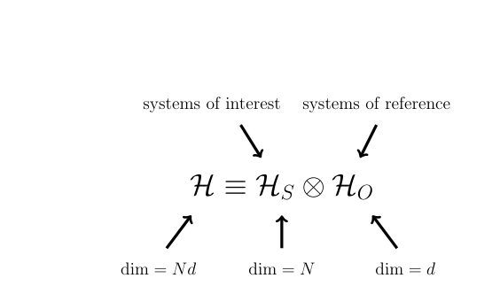
<figcaption class="paper-figure-caption"><b>Fig 1.</b> Figure 1. The names and dimensions of the Hilbert space on which magic unitaries act. We regard HX as a system of interest. It contains the eigenbasis |x⟩of the observable X. This basis is the one permuted. HO can be regarded as an external observer, as is the case in QRFs.</figcaption>
</figure>
<figure class="paper-figure-card">
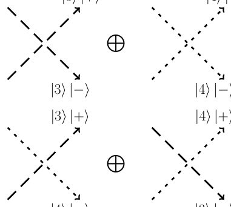
<figcaption class="paper-figure-caption"><b>Fig 2.</b> Figure 2. An illustration of the action of the BQC permutation u from (21) with π1 = |↑⟩⟨↑| , π2 = |+⟩⟨+| on the Hilbert space H = HS ⊗HO = L4 x=1 |x⟩⊗HO, with HO = C2. That is, N = 4, d = 2 and the total Hilbert space is of dimension Nd = 8. The figure illustrates how the different subspaces of each original copy of HO move from one component to the other, creating a different decomposition of H into orthogonal subspaces.</figcaption>
</figure>
<figure class="paper-figure-card">
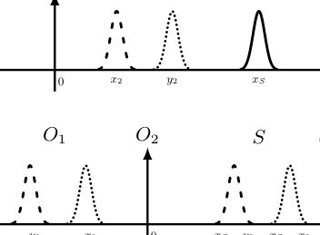
<figcaption class="paper-figure-caption"><b>Fig 3.</b> Figure 3. A simple use case for quantum controlled reference frame transformations. (a) A state from O1’s perspective: O1 is at the origin, S is at a fixed position, and O2 is in a superposition of two locations. (b) Same situation described from O2’s perspective after applying the quantum reference frame transformation: O2 is at the origin, while O1 and S are in an entangled state such that signed distances are pre- served. Dashed and dotted lines represent different superpo- sition branches.</figcaption>
</figure>
<figure class="paper-figure-card">
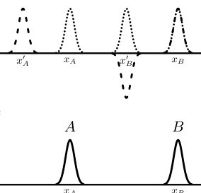
<figcaption class="paper-figure-caption"><b>Fig 4.</b> Figure 4. (a) The state (40) of the two particles with respect to observer O1 is a superposition of two terms: a term where A is localized at xA and B is in a superposition of locations xB and x′ B, and a term where A is localized at x′ A and B is in a superposition of the same two locations but now with a relative minus sign. Here, the different line patterns represent the entanglement across branches. In the O1 frame the parti- cles are also entangled with the reference fields, which are in the states |ϕ⟩O1O2 and |ϕ⊥⟩O1O2 in the respective branches. These field states are not shown in the figure. (b) From the perspective of O2, the same state is (42), with A and B at the definite...</figcaption>
</figure>
</div>

<p><strong>Summary.</strong> This paper introduces 'quantum permutations' as a necessary generalization of quantum reference frames to handle relational descriptions in physics. It proves that genuine quantum effects, specifically the non-commutativity of reference fields, mandate the use of these complex permutations rather than simpler classical transformations. This has implications for understanding covariance in quantum gravity and quantum information theory.</p>
<p><strong>Why it may be interesting.</strong> The formalism provides a rigorous mathematical framework for understanding how physical laws must change when viewed from different, non-commuting reference frames, which is crucial for theories involving curved spacetime or quantum gravity.</p>
<details>
<summary>Detailed structure</summary>
<p><strong>Main problem.</strong> The paper generalizes quantum reference frames by importing the mathematical tool of 'quantum permutations' to describe transformations between relational descriptions of quantum systems.</p>
<p><strong>Main result.</strong> Genuinely quantum permutations (BQC) are necessary when non-commutativity is present in the reference fields, allowing for local superpositions that surpass the limitations of standard quantum controlled (QC) frame transformations.</p>
<p><strong>Method.</strong> The authors use mathematical derivations comparing observables across different reference frames in both first-quantization and quantum field settings to constrain the required transformation unitaries.</p>
<p><strong>Model / system.</strong> The analysis covers general quantum systems, discrete quantum fields, the Ising model symmetries, and a scalar field action on curved spacetime. The core mathematical tool is the 'quantum permutation' acting as the change-of-frame operator.</p>
<p><strong>Key observables.</strong> Relative observables ($\hat{X}_2 = u \hat{X}_1 u^\dagger$), relative quantum fields ($\hat{\varphi}_i(x_\mu)$), and action invariance ($S$).</p>
<p><strong>Important parameters / regimes.</strong> Non-commutativity of reference fields, the distinction between 'classical' (QC) vs. 'genuinely quantum' (BQC) permutations.</p>
<p><strong>Assumptions / limitations.</strong> The standard framework assumes a 'God's eye view' for comparison, and later sections rely on differentiability conditions or specific commutation relations to analyze action invariance.</p>
<p><strong>Figures summary.</strong> Figure 1 illustrates the Hilbert space dimensions involved in comparing descriptions from different reference frames in first-quantization settings.</p>
<p><strong>Paper structure.</strong> The paper establishes the necessity of quantum permutations for relational descriptions, applies this concept to first-quantization systems (Section II A), extends it to quantum fields (Section II B), and finally investigates covariance and action invariance using toy models like the Ising model and scalar field theory in appendices.</p>
</details>
<details>
<summary>Abstract</summary>
<p>Quantum permutations, or magic unitaries, have in recent years been explored in the context of identifying <code>genuinely quantum' isometries of graphs. Here, we import this tool in physics, showing that quantum permutations yield a generalisation of quantum reference frames in a discrete setting that is reminiscent of the passage from special to general relativity. We show that the typical quantum reference frames framework corresponds to quantum permutations classified as</code>classical' in the mathematical literature, and which we demonstrate are quantum controlled transformations (superpositions of classical coordinate maps). Genuinely quantum permutations (i) allow to construct \emph{non--commuting} quantum reference frames (ii) correspond to \emph{local}, as opposed to global, superpositions of transformations. Strikingly, we find that the non-commutativity of quantum fields, when used as reference systems, is exactly what implies that the change of frame is achieved through a genuine quantum permutation. We illustrate the above with several examples in both first and second quantization formalism, which demonstrate (a) simultaneous control on non--commuting variables, (b) the existence of bipartite states that can be localized with a genuine quantum permutation and cannot be localized with the usual quantum reference frame transformations (without introducing additional degrees of freedom), (c) extension of the Ising model symmetries to genuinely quantum permutations, and (d) extension of the symmetries of a scalar field action on curved spacetime to genuinely quantum permutations. While we have in mind applications in quantum gravity, we expect our formalism to be of interest in a wide range of topics in quantum information.</p>
</details>
<p><sub><a href="#top">↑ back to top</a></sub></p>

<p><a id="paper-2608.14816"></a></p>
<h3 id="universal-emergence-of-bosonic-and-fermionic-algebras-in-a-deterministic-proper-time-framework"><a href="http://arxiv.org/abs/2608.14816v1">Universal Emergence of Bosonic and Fermionic Algebras in a Deterministic Proper-Time Framework</a></h3>
<p><strong>Authors:</strong> Alessio Maiezza<br>
<strong>Type:</strong> theory · <strong>Category:</strong> other · <strong>PDF:</strong> <a href="https://arxiv.org/pdf/2608.14816v1">https://arxiv.org/pdf/2608.14816v1</a><br>
<strong>Analysis basis:</strong> full PDF text, analyzed in chunks
<strong>Topic relevance:</strong> <code>Keldysh / 2PI / non-Gaussian methods</code> <strong>3/5</strong> · <code>quantum measurements</code> <strong>1/5</strong></p>
<div class="figure-strip-hint">↔ Scroll figures horizontally</div>
<div class="paper-figures-scroll">
<figure class="paper-figure-card">
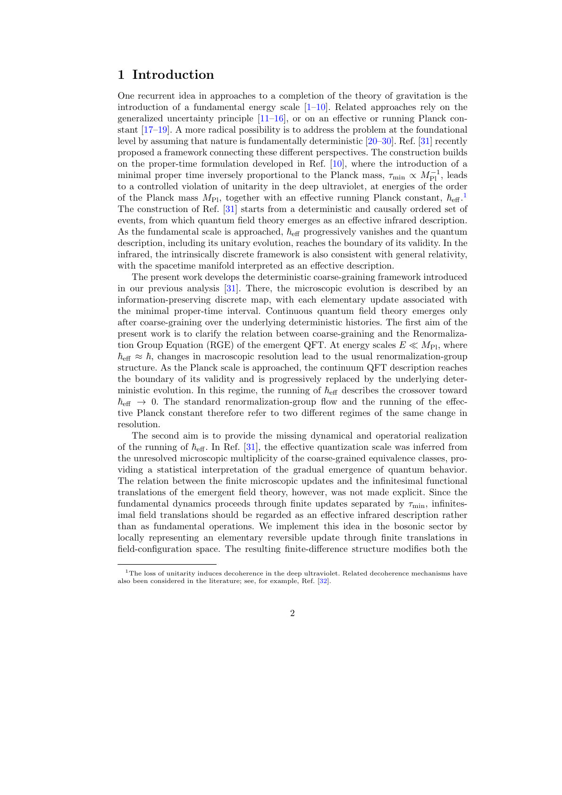
<figcaption class="paper-figure-caption"><b>Fig 1.</b> Low-resolution page preview, page 2</figcaption>
</figure>
<figure class="paper-figure-card">
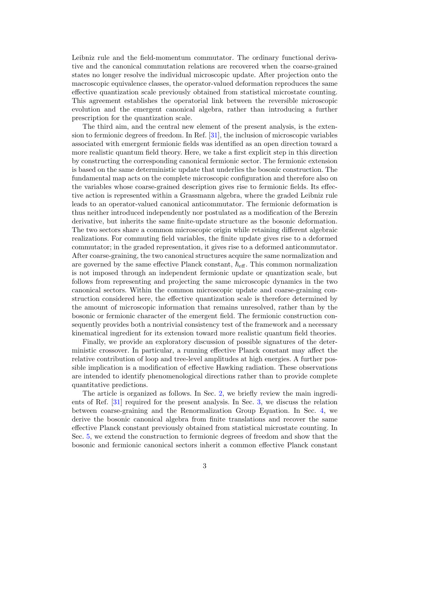
<figcaption class="paper-figure-caption"><b>Fig 2.</b> Low-resolution page preview, page 3</figcaption>
</figure>
<figure class="paper-figure-card">
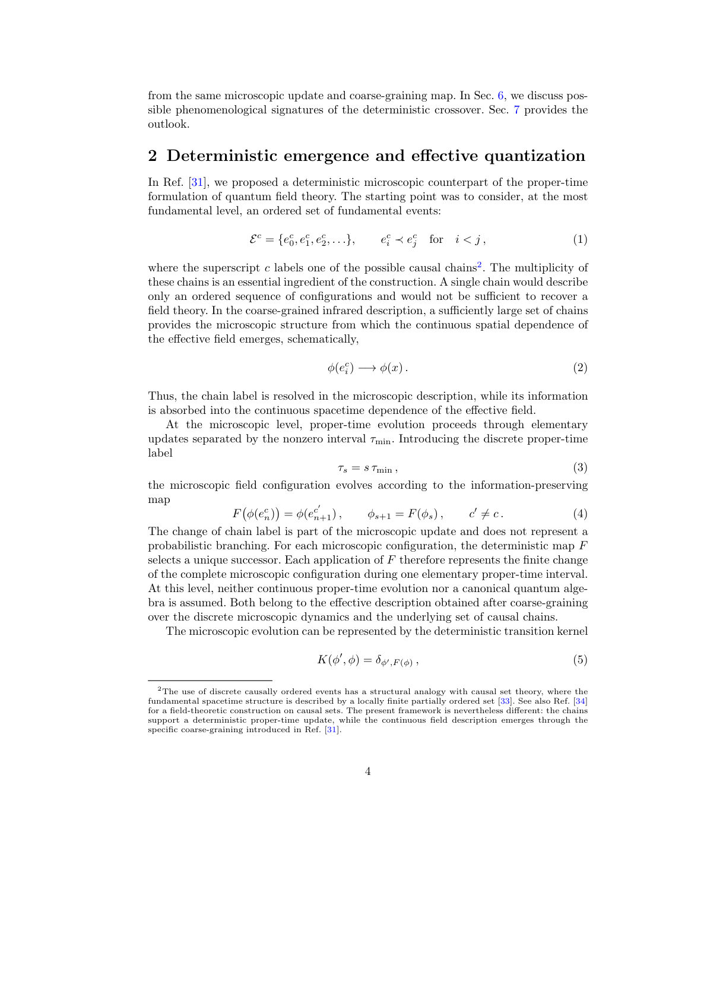
<figcaption class="paper-figure-caption"><b>Fig 3.</b> Low-resolution page preview, page 4</figcaption>
</figure>
<figure class="paper-figure-card">
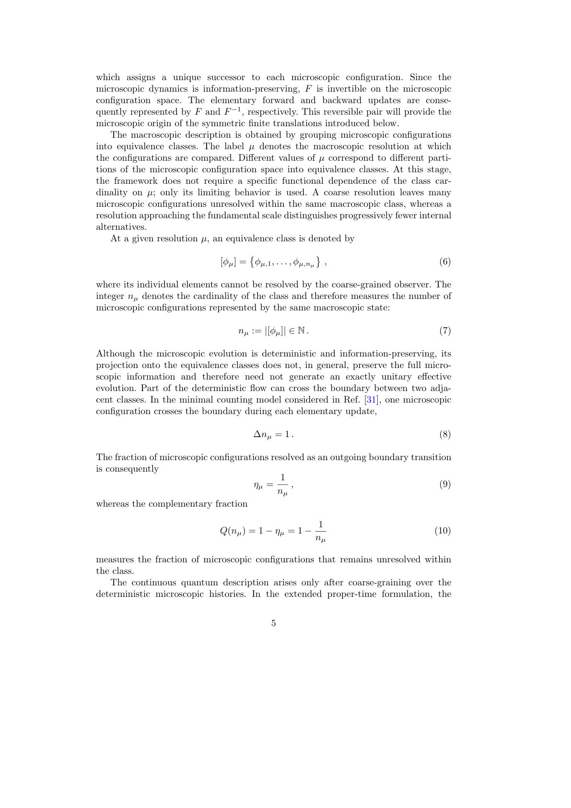
<figcaption class="paper-figure-caption"><b>Fig 4.</b> Low-resolution page preview, page 5</figcaption>
</figure>
<figure class="paper-figure-card">
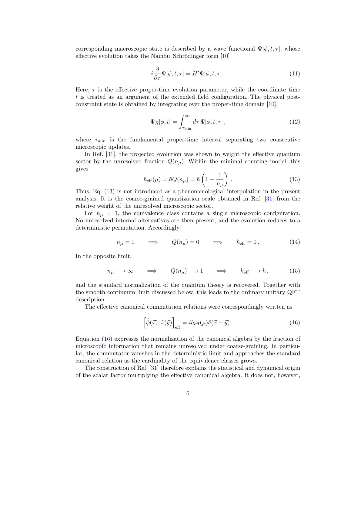
<figcaption class="paper-figure-caption"><b>Fig 5.</b> Low-resolution page preview, page 6</figcaption>
</figure>
</div>

<p><strong>Summary.</strong> This paper proposes a deterministic framework where Quantum Field Theory emerges from discrete, microscopic proper-time evolution. It rigorously constructs both bosonic and fermionic commutation/anticommutation relations using this underlying dynamics. The key achievement is demonstrating that both sectors share a common effective Planck constant, suggesting a unified origin for quantum statistics.</p>
<p><strong>Why it may be interesting.</strong> While highly theoretical, its focus on emergent quantization scales ($\hbar_{	ext{eff}}$) and linking fundamental dynamics (deterministic updates) to established quantum structures (RGE, canonical algebras) provides a novel perspective on the foundations of QFT relevant to open systems theory.</p>
<details>
<summary>Detailed structure</summary>
<p><strong>Main problem.</strong> The work develops a deterministic, discrete proper-time framework aiming to explain how Quantum Field Theory (QFT) emerges as an effective infrared description.</p>
<p><strong>Main result.</strong> It successfully shows that both bosonic and fermionic sectors inherit a common effective Planck constant ($\hbar_{	ext{eff}}$) derived from the underlying microscopic dynamics, linking canonical algebra emergence to unresolved microstate counting.</p>
<p><strong>Method.</strong> The methodology involves analyzing consistency under resolution changes to derive Renormalization Group structure, using finite-difference translations for bosons, and employing Grassmann algebras for fermions.</p>
<p><strong>Model / system.</strong> The model is a deterministic, discrete proper-time framework built on ordered event chains. QFT emerges as the coarse-grained limit of this underlying microscopic evolution.</p>
<p><strong>Key observables.</strong> Effective running Planck constant ($\hbar_{	ext{eff}}$), bosonic commutation relations, fermionic anticommutation relations, and Hawking radiation suppression factors.</p>
<p><strong>Important parameters / regimes.</strong> The effective quantization scale derived from unresolved microscopic multiplicity ($n_\mu$), the minimal proper time interval ($    au_{\min}$), and the resolution parameter ($\mu$).</p>
<p><strong>Assumptions / limitations.</strong> QFT is treated as an effective infrared description resulting from coarse-graining over fundamental deterministic histories, and the framework assumes a common underlying update mechanism for both particle types.</p>
<p><strong>Paper structure.</strong> The paper progresses by first establishing the RGE structure via resolution changes, then deriving bosonic canonical relations using finite differences, extending this to fermions via Grassmann algebra, and finally discussing implications like Hawking radiation suppression.</p>
</details>
<details>
<summary>Abstract</summary>
<p>This work develops the deterministic, discrete proper-time framework introduced in our previous work, Eur.\ Phys.\ J.\ C \textbf{86} (2026) 829, in which quantum field theory emerges as an effective infrared description characterized by a running Planck constant. There, the effective quantization scale was inferred from the microscopic multiplicity unresolved by coarse-graining. Here, we provide its dynamical and operatorial realization and extend the construction to fermionic degrees of freedom. First, consistency under changes of macroscopic resolution leads to the structure of the Renormalization Group Equation, while the running Planck constant governs the crossover toward the deterministic regime. Second, we represent the reversible microscopic dynamics through finite-difference translations in field-configuration space. After coarse-graining, the resulting operator-valued canonical commutation relations reproduce the same quantization scale previously obtained from statistical microstate counting, thereby linking microscopic evolution to the emergent canonical algebra. Third, representing the same update within a Grassmann algebra yields the corresponding canonical anticommutation relations. The bosonic and fermionic sectors thus inherit a common effective Planck constant without introducing an independent fermionic update or quantization scale. Finally, we discuss possible implications for high-energy loop amplitudes and effective Hawking radiation.</p>
</details>
<p><sub><a href="#top">↑ back to top</a></sub></p>

<p><a id="paper-2608.15542"></a></p>
<h3 id="zero-point-theorems-in-quantum-many-body-physics"><a href="http://arxiv.org/abs/2608.15542v1">Zero-point theorems in quantum many-body physics</a></h3>
<p><strong>Authors:</strong> Yuan Yao<br>
<strong>Type:</strong> theory · <strong>Category:</strong> statistical mechanics · <strong>PDF:</strong> <a href="https://arxiv.org/pdf/2608.15542v1">https://arxiv.org/pdf/2608.15542v1</a><br>
<strong>Analysis basis:</strong> full PDF text, analyzed in chunks
<strong>Topic relevance:</strong> <code>analog quantum simulation</code> <strong>3/5</strong></p>
<div class="figure-strip-hint">↔ Scroll figures horizontally</div>
<div class="paper-figures-scroll">
<figure class="paper-figure-card">
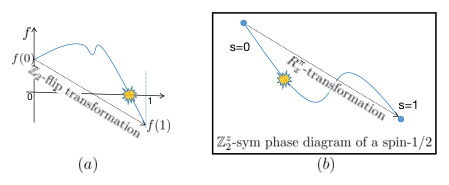
<figcaption class="paper-figure-caption"><b>Fig 1.</b> FIG. 1. (a) Zero-point theorem: the constraint is a Z2- transformation on the interval boundary; (b) Zero-point the- orem in quantum mechanics: a gap-closing point (denoted by the burst shape) is inevitable.</figcaption>
</figure>
<figure class="paper-figure-card">
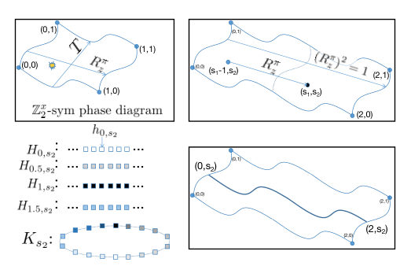
<figcaption class="paper-figure-caption"><b>Fig 2.</b> FIG. 2. Left-up: Theorem 2; Right-up: the doubling pro- cedure s1 ∈[0, 2]; Bottom: the construction of the texture Hamiltonian Ks2.</figcaption>
</figure>
<figure class="paper-figure-card">
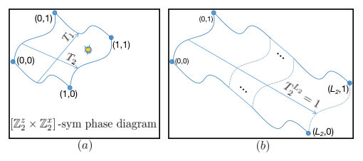
<figcaption class="paper-figure-caption"><b>Fig 3.</b> FIG. 3. (a) Theorem 3; (b) Extension s1 ∈[0, L2].</figcaption>
</figure>
<figure class="paper-figure-card">
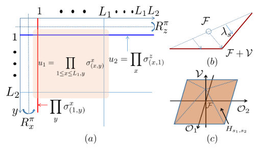
<figcaption class="paper-figure-caption"><b>Fig 4.</b> FIG. 4. (a) Ktw s2 : The links perpendicularly intersecting the horizontal line y = 1/2 are twisted by Rπ z , and Rπ x for those links intersecting the x = 1/2 line; u2 intersects Q</figcaption>
</figure>
</div>

<p><strong>Summary.</strong> This paper develops generalized zero-point theorems for quantum spin systems by analyzing the spectral gap function across multi-parameter families of Hamiltonians. By imposing only model-independent symmetry constraints on the parameter boundaries, the authors prove that the gap must close at certain points. This yields universal restrictions on the relevant operators governing critical behavior in high dimensions.</p>
<p><strong>Why it may be interesting.</strong> This work provides universal, symmetry-based constraints on critical points that are independent of detailed low-energy Hamiltonians, offering a powerful theoretical tool applicable across various quantum phases studied in AMO and condensed matter physics.</p>
<details>
<summary>Detailed structure</summary>
<p><strong>Main problem.</strong> To establish powerful, model-independent constraints on relevant operators governing critical phenomena in quantum spin models across arbitrary high dimensions.</p>
<p><strong>Main result.</strong> The authors propose and generalize zero-point theorems showing that the spectral gap function must vanish at certain points within multi-parameter families of Hamiltonians under specific symmetry constraints.</p>
<p><strong>Method.</strong> The core method generalizes mathematical zero-point arguments by applying model-independent transformation relations (like those relating boundary conditions) to the gap function $\Delta(H)$ across continuous parameter spaces.</p>
<p><strong>Model / system.</strong> The study focuses on quantum many-body systems, specifically spin-1/2 models defined on lattices (chains and 2D square lattices), parameterized by multiple coupling constants or symmetries ($\mathbb{Z}_2 	imes \mathbb{Z}_2$, etc.).</p>
<p><strong>Key observables.</strong> The spectral gap function $\Delta(H) = \lim_{L	o\infty} E_2(H) - E_1(H)$, which signals the presence or absence of a gap.</p>
<p><strong>Important parameters / regimes.</strong> The dimensionality ($d$) and the number of continuous parameters ($p$) defining the Hamiltonian family, as well as symmetry constraints ($\mathbb{Z}_2$, $T$).</p>
<p><strong>Assumptions / limitations.</strong> The theorems only require imposing model-independent transformation data on the parameter boundary, avoiding assumptions about specific low-energy dynamics or response functions.</p>
<p><strong>Figures summary.</strong> Figures illustrate the mathematical zero-point theorem and its quantum mechanical analogues, showing gap closing. They also visualize the geometric generalization of these theorems to two parameters in 2D lattices.</p>
<p><strong>Paper structure.</strong> The paper builds from a basic one-parameter zero-point theorem (Theorem 0) to generalizations involving multiple parameters (Theorem 2), culminating in conjectures for $p$-parameter families on $d$-dimensional lattices.</p>
</details>
<details>
<summary>Abstract</summary>
<p>We propose several zero-point type arguments based on the inevitable zero point(s) of a spectral gap in the quantum spin system phase diagrams in various dimensions. We consider multi-parameter families of Hamiltonian extending the conventional zero-point theorem that includes only one parameter. Analogously to the zero-point theorem, we only impose model-independent transformation relations along the parameter boundary, rather than specifying any low-energy dynamics or response. We further give a series of conjectures, which generalize our statements in a uniform way. Our results give powerful and universal model-independent constraints on the possible relevant operators for critical phenomena in quantum spin models in arbitrary high dimensions.</p>
</details>
<p><sub><a href="#top">↑ back to top</a></sub></p>

<p><a id="paper-2608.14880"></a></p>
<h3 id="coherent-phonon-blocking-in-superlattices"><a href="http://arxiv.org/abs/2608.14880v1">Coherent Phonon Blocking in Superlattices</a></h3>
<p><strong>Authors:</strong> Anil Erol, Xiang Hua, Kirby Myers, Lawrence Friedman, Alexander Marakov, Melissa G. Loving, Joshua Shipman, Arsha Mamoozadeh, Sarah Millen, Ronald J. Warzoha, Jeremy Clark, Robert M. Young<br>
<strong>Type:</strong> theory · <strong>Category:</strong> statistical mechanics · <strong>PDF:</strong> <a href="https://arxiv.org/pdf/2608.14880v1">https://arxiv.org/pdf/2608.14880v1</a><br>
<strong>Analysis basis:</strong> full PDF text, analyzed in chunks
<strong>Topic relevance:</strong> <code>Keldysh / 2PI / non-Gaussian methods</code> <strong>2/5</strong> · <code>driven-dissipative phase transition</code> <strong>2/5</strong> · <code>methods for driven-dissipative</code> <strong>2/5</strong> · <code>analog quantum simulation</code> <strong>1/5</strong> · <code>correlated / nonlocal dissipation</code> <strong>1/5</strong> · <code>interference shaping light</code> <strong>1/5</strong> · <code>non-equilibrium universality</code> <strong>1/5</strong> · <code>quantum measurements</code> <strong>1/5</strong></p>
<div class="figure-strip-hint">↔ Scroll figures horizontally</div>
<div class="paper-figures-scroll">
<figure class="paper-figure-card">
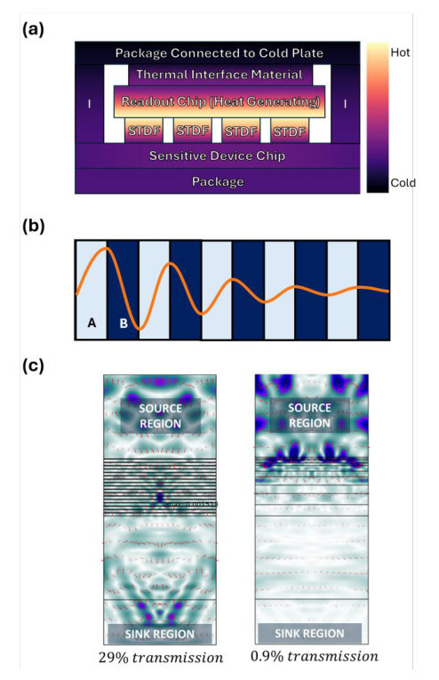
<figcaption class="paper-figure-caption"><b>Fig 1.</b> Figure 1 – (a) Sensitive devices on flip-chip assemblies can be protected by placing standoffs with large thermal resistance, e.g., superconducting bilayers that can filter phonons. (b) Phonons can be filtered with destructive interference in quarter-wave bilayers. Materials A and B must have large acoustic mismatch, interfaces must be smooth relative to phonon wavelengths and phonon coherence must be greater than thickness of the stack. (c) Reflections of a phonon, modeled as an elastic wave in COMSOL Multiphysics®1, are shown at time 𝑡1 for two cases: (left) laminate with same bilayer thicknesses; (right) laminate with varying thicknesses. While bilayers of the same thickness can reduce...</figcaption>
</figure>
<figure class="paper-figure-card">
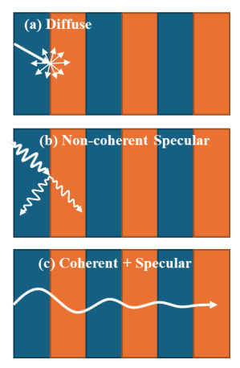
<figcaption class="paper-figure-caption"><b>Fig 2.</b> Figure 2 – Phonon propagation through layered solid media can be described as (a) diffuse scattering at interfaces with ballistic propagation through the bulk, (b) specular scattering at interfaces with ballistic bulk propagation and (c) coherent, specular scattering where phonon characteristics are elastically coupled in both the bulk and interfaces.</figcaption>
</figure>
<figure class="paper-figure-card">
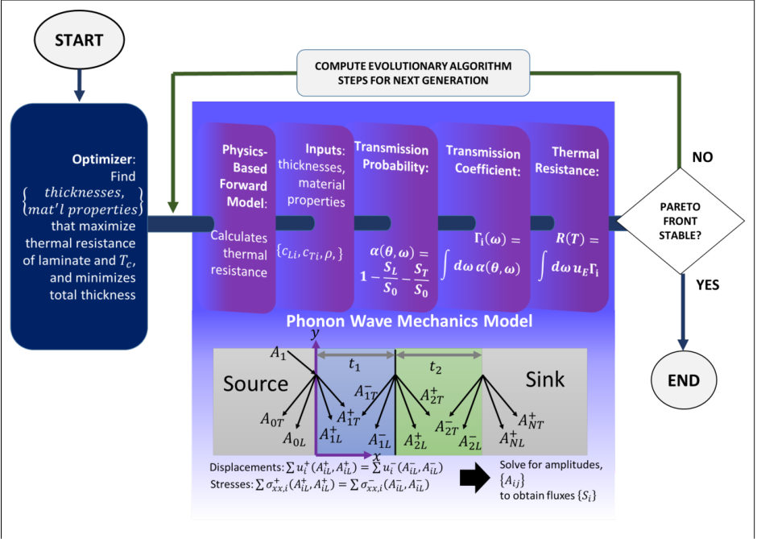
<figcaption class="paper-figure-caption"><b>Fig 3.</b> Figure 3 – A genetic algorithm was deployed for a multi-objective optimization that sought a maximum thermal resistance of the laminate 𝑅, maximum superconducting critical temperature 𝑇𝐶, and minimum total laminate thickness.</figcaption>
</figure>
<figure class="paper-figure-card">
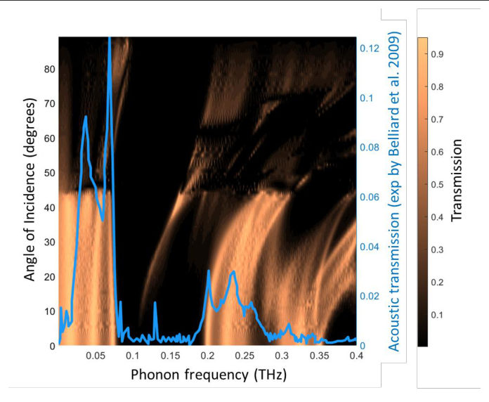
<figcaption class="paper-figure-caption"><b>Fig 4.</b> Figure 4 – The contours plot transmission probability (from 0 to 1) calculated by the model across all angles of incidence and up to 0.4 THz in phonon frequency for a 3 bilayer superlattice consisting of amorphous silicon and molybdenum. This superlattice was tested in the literature—the measured transmission spectroscopy is plotted versus frequency by the blue curve [19].</figcaption>
</figure>
<figure class="paper-figure-card">
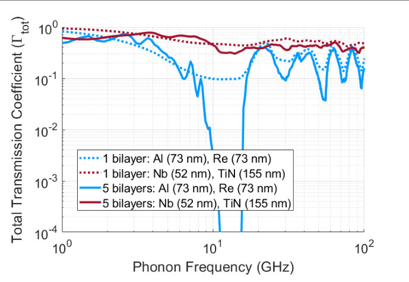
<figcaption class="paper-figure-caption"><b>Fig 5.</b> Figure 5 – Phonon transmission coefficients are plotted for two laminates made of either (1) Re and Al or (2) Nb and TiN. Each type of laminate’s transmission coefficient is plotted with 1 bilayer and 5 bilayers to show the effects of adding more bilayers.</figcaption>
</figure>
</div>

<p><strong>Summary.</strong> This work introduces a novel wave-mechanics framework to predict phonon transmission through superlattices at cryogenic temperatures. By enforcing phase coherence and optimizing layer thicknesses using a genetic algorithm, the authors designed structures achieving unprecedented thermal resistance enhancements. This has major implications for ultra-low temperature electronics and thermal management.</p>
<p><strong>Why it may be interesting.</strong> While focused on phonons, the rigorous application of wave mechanics, coherence constraints, and complex optimization techniques mirrors challenges in modeling open quantum systems where boundary conditions and energy transport are critical.</p>
<details>
<summary>Detailed structure</summary>
<p><strong>Main problem.</strong> Controlling phonon energy transport at cryogenic temperatures, where phonons are dominant energy carriers and exhibit ballistic behavior.</p>
<p><strong>Main result.</strong> The authors developed a model predicting superlattices with thermal resistance up to 3000 times greater than previous reports by exploiting coherent acoustic scattering effects.</p>
<p><strong>Method.</strong> A wave-mechanics based framework utilizing the transfer matrix method, optimized via a genetic algorithm (NSGA-II).</p>
<p><strong>Model / system.</strong> The system is multi-layered superlattices composed of various materials. The model treats phonon propagation using coherent scattering theory, departing from standard Acoustic/Diffuse Mismatch Models.</p>
<p><strong>Key observables.</strong> Frequency-dependent phonon transmission ($\Gamma$), total thermal resistance ($R_{	ext{CLAMM}}$), and superconducting critical temperature ($T_c$).</p>
<p><strong>Important parameters / regimes.</strong> Cryogenic temperatures, quarter-wavelength condition matching, acoustic mismatch, and layer thicknesses.</p>
<p><strong>Assumptions / limitations.</strong> The model enforces phase coherence (specular scattering) across layers and assumes the system can be analyzed using planar elastic wave theory.</p>
<p><strong>Figures summary.</strong> Figure 1 illustrates phonon filtering via destructive interference in quarter-wave bilayers; Figure 2 compares diffuse, specular, and coherent phonon propagation modes.</p>
<p><strong>Paper structure.</strong> The paper introduces the problem of cryogenic heat transport, details the CLAMM framework using transfer matrices for wave calculation, applies a multi-objective optimization (NSGA-II) to select optimal material stacks, and presents results showing massive thermal resistance enhancement.</p>
</details>
<details>
<summary>Abstract</summary>
<p>At cryogenic temperatures, phonons become one of the dominant energy carriers and thus can strongly influence the performance of electronic and sensing devices. In this work, we present a wave-mechanics based framework that predicts phonon transmission and thermal resistance of arbitrarily thick superlattices while retaining all acoustic branches, mode-conversion pathways, and angles of incidence. By enforcing phase coherence, our model predicts frequency-dependent transmission through arbitrary multi-layered structures.We use a genetic algorithm (NSGA-II) to efficiently select both materials and layer thicknesses. Our success criterion is that constituent layers satisfy the quarter-wavelength condition of the dominant phonon frequencies at a target temperature. This strategy identifies novel bilayer combinations that achieve thermal resistance of up to 3000 times greater than previously reported superlattices. The identified superlattices are poised to advance any technology that relies on coherent acoustic scattering, from ultra-low-temperature thermal insulation in superconducting flip-chip assemblies to phonon-blocking components in micro- and nano-electromechanical systems.</p>
</details>
<p><sub><a href="#top">↑ back to top</a></sub></p>

<p><a id="paper-2608.15462"></a></p>
<h3 id="information-order-complexity-and-entropy-in-materials-including-biological-systems-a-thermodynamic-theory-based-on-state-variables"><a href="http://arxiv.org/abs/2608.15462v1">Information, order, complexity, and entropy in materials including biological systems: a thermodynamic theory based on state variables</a></h3>
<p><strong>Authors:</strong> Koun Shirai<br>
<strong>Type:</strong> theory · <strong>Category:</strong> statistical mechanics · <strong>PDF:</strong> <a href="https://arxiv.org/pdf/2608.15462v1">https://arxiv.org/pdf/2608.15462v1</a><br>
<strong>Analysis basis:</strong> full PDF text, analyzed in chunks
<strong>Topic relevance:</strong> <code>Keldysh / 2PI / non-Gaussian methods</code> <strong>2/5</strong> · <code>driven-dissipative phase transition</code> <strong>2/5</strong> · <code>methods for driven-dissipative</code> <strong>2/5</strong> · <code>analog quantum simulation</code> <strong>1/5</strong> · <code>correlated / nonlocal dissipation</code> <strong>1/5</strong> · <code>non-equilibrium universality</code> <strong>1/5</strong> · <code>quantum measurements</code> <strong>1/5</strong></p>
<div class="figure-strip-hint">↔ Scroll figures horizontally</div>
<div class="paper-figures-scroll">
<figure class="paper-figure-card">
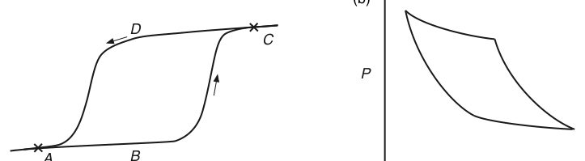
<figcaption class="paper-figure-caption"><b>Fig 1.</b> FIG. 1. (a) hysteresis loop. The input variable X and its response Y of a system return to the</figcaption>
</figure>
<figure class="paper-figure-card">
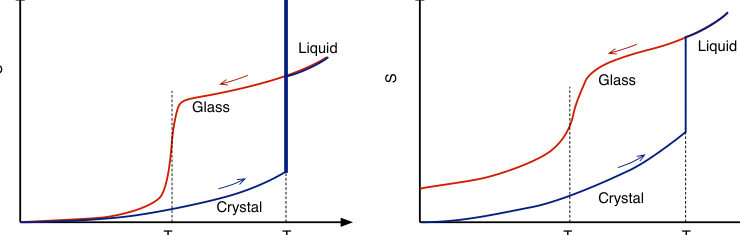
<figcaption class="paper-figure-caption"><b>Fig 2.</b> FIG. 2. Specific heat (C) and entropy (S) of a glass measured during a cooling process in calorime-</figcaption>
</figure>
<figure class="paper-figure-card">
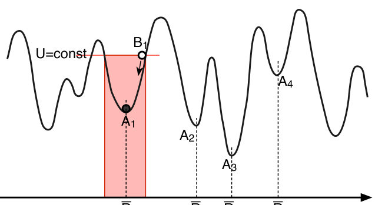
<figcaption class="paper-figure-caption"><b>Fig 3.</b> FIG. 3. Schematic potential-energy landscape of a solid. The equilibrium states Aj are specified</figcaption>
</figure>
<figure class="paper-figure-card">
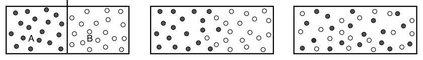
<figcaption class="paper-figure-caption"><b>Fig 4.</b> FIG. 4. Mixing of two gases, A and B, in a container. (a) Initially, the two gases are separated by</figcaption>
</figure>
<figure class="paper-figure-card">
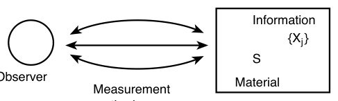
<figcaption class="paper-figure-caption"><b>Fig 5.</b> FIG. 5. (a) Information in information theory. The information data are carried through a channel</figcaption>
</figure>
</div>

<p><strong>Summary.</strong> This paper tackles the conceptual overlap between entropy from thermodynamics and information theory. It argues that by identifying time-averaged atomic positions as the true state variables for solids, it provides a unified framework that preserves the third law while distinguishing thermodynamic uncertainty (entropy) from actual stored information. This resolves long-standing ambiguities in analyzing complex materials like glasses and biological structures.</p>
<p><strong>Why it may be interesting.</strong> While focused on classical statistical mechanics, its rigorous re-evaluation of 'state' and 'information' has implications for defining order parameters in complex quantum many-body systems or open quantum systems where environmental coupling dictates effective state variables.</p>
<details>
<summary>Detailed structure</summary>
<p><strong>Main problem.</strong> The central issue is resolving conceptual ambiguities when applying information-theoretic concepts (like Shannon entropy) to thermodynamic quantities, especially concerning the definition of state variables for materials.</p>
<p><strong>Main result.</strong> The paper establishes that time-averaged atom positions serve as the necessary state variables for solids, leading to a unified framework where entropy represents uncertainty rather than pure information content.</p>
<p><strong>Method.</strong> The analysis involves comparing and reconciling definitions from classical thermodynamics, statistical mechanics, and information theory (e.g., using configurational entropy $S_c$ and complexity measures $I$).</p>
<p><strong>Model / system.</strong> The scope covers general materials, including crystalline solids, amorphous solids (glasses), and biological systems like DNA.</p>
<p><strong>Key observables.</strong> Entropy ($S$), Information content ($I$), Complexity, Residual entropy, and state variables ($\{ar{R}_j\}$).</p>
<p><strong>Important parameters / regimes.</strong> Temperature ($T$) and Volume ($V$); the structural parameters $\{ar{R}_j\}$ are crucial for defining equilibrium.</p>
<p><strong>Assumptions / limitations.</strong> The primary assumption is that identifying a set of state variables (time-averaged atom positions) can resolve inconsistencies in thermodynamic definitions across different physical regimes.</p>
<p><strong>Paper structure.</strong> The paper develops by first highlighting the ambiguity between thermodynamic and information entropy, then proposing the identification of structural parameters as state variables to derive a consistent thermodynamic description for solids, which is then used to address biological complexity.</p>
</details>
<details>
<summary>Abstract</summary>
<p>Entropy plays a central role in thermodynamics, statistical mechanics, information theory, and biology. However, its interpretation becomes increasingly ambiguous when information-theoretic concepts are applied to materials, including biological systems. For example, in biology, it is common practice to evaluate the entropy of DNA by enumerating possible configurations. This configuration entropy does not vanish at $T=0$, apparently contradicting the third law. Similar conceptual difficulties also arise in relating entropy to order, randomness, complexity, and information. In thermodynamics, entropy is a state function, and hence the entropy must be uniquely determined by a given state of a material. The crucial issue is therefore to identify the state variables that uniquely specify the thermodynamic state of a material. By establishing consistent definition of equilibrium and state variable, it is found that the time-averaged atom positions serve as the state variables of a solid. This leads to the important conclusion that a solid possesses many equilibrium states even at fixed temperature and volume. Entropy is not information but uncertainty associated with the state variables. The latter quantities convey the information of a material. This framework provides a unified thermodynamic basis of entropy, information, order, complexity, hysteresis, and residual entropy while preserving the third law. Frozen configurations and their activation resolve many longstanding ambiguities the thermodynamic evaluation of entropy.</p>
</details>
<p><sub><a href="#top">↑ back to top</a></sub></p>

<p><a id="paper-2608.15078"></a></p>
<h3 id="localization-and-transport-in-a-non-hermitian-hexagonal-harper-model"><a href="http://arxiv.org/abs/2608.15078v1">Localization and Transport in a Non-Hermitian Hexagonal Harper Model</a></h3>
<p><strong>Authors:</strong> Akshey Rajoriya, Dibyajyoti Sahu, Suhas Gangadharaiah, Tanay Nag<br>
<strong>Type:</strong> theory · <strong>Category:</strong> disordered systems and neural networks · <strong>PDF:</strong> <a href="https://arxiv.org/pdf/2608.15078v1">https://arxiv.org/pdf/2608.15078v1</a><br>
<strong>Analysis basis:</strong> full PDF text, analyzed in chunks
<strong>Topic relevance:</strong> <code>analog quantum simulation</code> <strong>2/5</strong> · <code>driven-dissipative phase transition</code> <strong>2/5</strong> · <code>non-equilibrium universality</code> <strong>2/5</strong> · <code>Keldysh / 2PI / non-Gaussian methods</code> <strong>1/5</strong> · <code>correlated / nonlocal dissipation</code> <strong>1/5</strong> · <code>methods for driven-dissipative</code> <strong>1/5</strong> · <code>scars &amp; prethermalization</code> <strong>1/5</strong></p>
<div class="figure-strip-hint">↔ Scroll figures horizontally</div>
<div class="paper-figures-scroll">
<figure class="paper-figure-card">
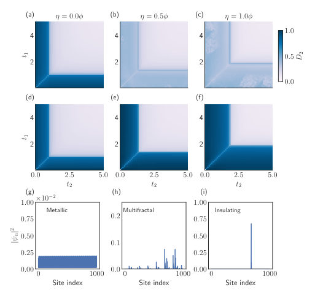
<figcaption class="paper-figure-caption"><b>Fig 1.</b> FIG. 2. Average fractal dimension D2 in the (t1, t2) plane for different non-Hermitian strengths η (in units of the golden ra- tio ϕ) with t3 = 1. Panels (a)–(c) and (d)–(f) show the phase diagrams under OBC and PBC, respectively, for η = 0, 0.5ϕ, and ϕ. Panels (g)–(i) show representative eigenstate proba- bility distributions |ψn|2 under PBC at (t1, t2) = (3.0, 0.1), (3.0, 1.81), and (3.0, 4.5), corresponding to the metallic, mul- tifractal, and insulating phases, respectively. The system size is L = 1000.</figcaption>
</figure>
<figure class="paper-figure-card">
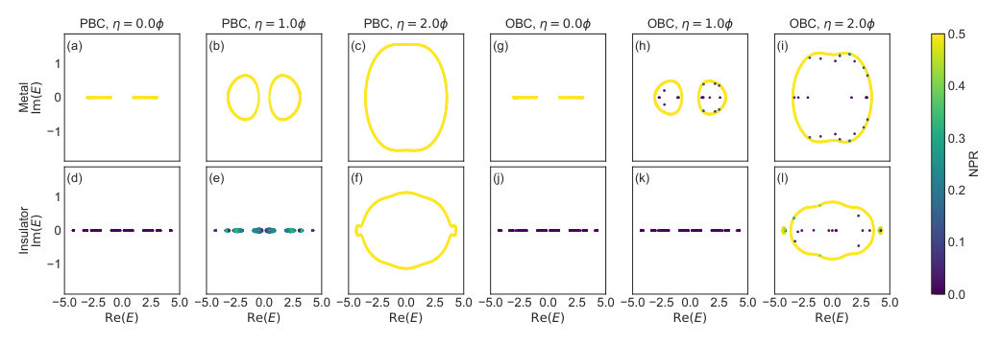
<figcaption class="paper-figure-caption"><b>Fig 2.</b> FIG. 3. Complex energy spectrum in the Re(E)–Im(E) plane, with eigenstates colored by the NPR. Panels (a)–(f) [(g)–(l)] correspond to PBC (OBC) for η = 0, ϕ, 2ϕ. Panels (a)–(c) and (g)–(i) show a metallic point (t1, t2) = (2.0, 0.1), while panels (d)–(f) and (j)–(l) show an insulating point (t1, t2) = (2.0, 1.81), with t3 = 1. In the metallic regime, the spectrum evolves from a purely real structure to complex point-gap structures, while the pronounced differences between PBC and OBC spectra indicate the emergence of the NHSE. In the insulating regime, increasing non-Hermiticity drives a transition toward extended states accompanied by boundary accumulation under OBC. The system size is L =...</figcaption>
</figure>
<figure class="paper-figure-card">
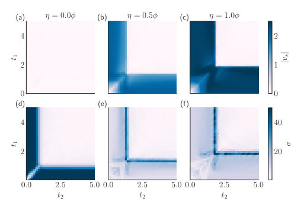
<figcaption class="paper-figure-caption"><b>Fig 3.</b> FIG. 5. Wave-packet transport under OBC. Heatmaps of the sliding velocity |vs| (a–c) and wave-packet spread σ (d–f) in the (t1, t2) plane for η = 0, 0.5ϕ, and ϕ, respectively. Finite sliding develops with increasing non-Hermiticity, while the wave-packet spread is largest in the multifractal regime. We consider t = 100. The system size is L = 1000.</figcaption>
</figure>
<figure class="paper-figure-card">
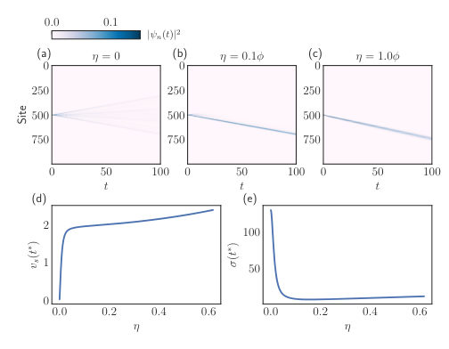
<figcaption class="paper-figure-caption"><b>Fig 4.</b> FIG. 4. Spatiotemporal evolution of a wave packet in the non-Hermitian HH model for t1 = 3.0 and t2 = 0.1. Panels (a)–(c) show the probability density |ψj(t)|2 for η = 0, 0.1ϕ, and 1.0ϕ, respectively. Panels (d) and (e) show the sliding velocity vs(t∗) and wave-packet width σ(t∗) as functions of η at t∗= 100. The system size is L = 1000.</figcaption>
</figure>
<figure class="paper-figure-card">
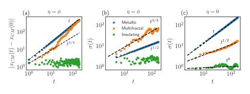
<figcaption class="paper-figure-caption"><b>Fig 5.</b> FIG. 8. Dynamic wave-packet signatures across the metal- lic (t1, t2) = (3.0, 0.1), multifractal (3.0, 1.81), and insulating (3.0, 4.5) phases under OBC. (a) Time evolution of the center- of-mass displacement |xCM(t) −xCM(0)|. (b) Time evolution of the wave-packet width σ(t) for the non-Hermitian case (η = ϕ). (c) Time evolution of the wave-packet width σ(t) for the Hermitian case (η = 0), where the multifractal phase corresponds to (t1, t2) = (3.0, 1.0). Dashed lines indicate the corresponding power-law fits. The system size is L = 1000.</figcaption>
</figure>
</div>

<p><strong>Summary.</strong> The paper analyzes transport in a non-Hermitian hexagonal Harper model featuring quasiperiodic hopping. It finds that introducing non-Hermiticity dramatically alters the system's phases, particularly highlighting a unique multifractal regime. This regime supports distinct superdiffusive dynamics for both wave-packet spreading and center-of-mass motion, which are fundamentally different from the purely ballistic or diffusive behaviors seen in other regimes.</p>
<p><strong>Why it may be interesting.</strong> This work provides a rich theoretical framework for understanding how breaking time-reversal symmetry (non-Hermiticity) interacts with quasiperiodicity to fundamentally change quantum transport, offering insights applicable to open quantum systems and engineered lattices.</p>
<details>
<summary>Detailed structure</summary>
<p><strong>Main problem.</strong> The study investigates localization and transport properties within a one-dimensional non-Hermitian hexagonal Harper model subjected to quasiperiodically modulated hopping amplitudes.</p>
<p><strong>Main result.</strong> Non-Hermiticity qualitatively alters the phase diagram, establishing the multifractal regime as a key mediator of transport characterized by superdiffusive dynamics, distinct from its Hermitian counterpart.</p>
<p><strong>Method.</strong> The analysis combines wave-packet dynamics to track center-of-mass motion and spreading, alongside spectral diagnostics like Inverse Participation Ratio (IPR) and entanglement entropy growth profiles.</p>
<p><strong>Model / system.</strong> The system is a 1D non-Hermitian hexagonal Harper model derived from an anisotropic lattice with quasiperiodic modulation ($\phi = (\sqrt{5}-1)/2$). The Hamiltonian incorporates hopping amplitudes modulated by the parameter $\eta$, which controls non-Hermiticity.</p>
<p><strong>Key observables.</strong> Wave-packet spreading ($\sigma(t)$), center-of-mass motion (sliding velocity $v_s$), single-particle entanglement entropy growth, and localization measures like IPR and Fractal Dimension ($D_2$).</p>
<p><strong>Important parameters / regimes.</strong> Non-Hermiticity strength ($\eta$), quasiperiodic flux ($\phi$), and the resulting phases: Metallic, Multifractal, and Insulating.</p>
<p><strong>Assumptions / limitations.</strong> The analysis relies on comparing results obtained under Periodic Boundary Conditions (PBC) versus Open Boundary Conditions (OBC), acknowledging the non-Hermitian skin effect in OBC calculations.</p>
<p><strong>Figures summary.</strong> Figure 1 schematically illustrates the model's hopping structure; subsequent figures detail how wave-packet dynamics and localization measures change across different phases as $\eta$ is varied.</p>
<p><strong>Paper structure.</strong> The paper progresses by first defining the non-Hermitian quasiperiodic model, then analyzing its phase diagram using spectral diagnostics (IPR/D2), followed by detailed dynamical studies of transport signatures (sliding vs. spreading) in each identified regime.</p>
</details>
<details>
<summary>Abstract</summary>
<p>We investigate a one-dimensional non-Hermitian hexagonal Harper model with quasiperiodically modulated hopping amplitudes. In the Hermitian limit, the model exhibits metallic, insulating, and multifractal phases characterized by distinct eigenstate properties. Upon introducing non- Hermiticity, the phase diagram is qualitatively altered, with an expansion of metallic regions and strong boundary sensitivity arising from the non-Hermitian skin effect. By analyzing wave-packet dynamics, we uncover qualitatively distinct transport signatures in metallic, multifractal, and in- sulating regimes. In the metallic region, nonreciprocal hopping induces finite sliding, resulting in ballistic center-of-mass motion that is absent in the Hermitian model, while wave-packet spreading is simultaneously suppressed and exhibits diffusive scaling. Interestingly, the multifractal regime emerges as a distinct dynamical phase supporting both enhanced spreading and finite sliding, both primarily of superdiffusive nature, in contrast to metallic regions where sliding (spreading) shows ballistic (diffusive) scaling. These features are markedly different from their Hermitian counterpart. On the other hand, in the insulating region, both the spreading and sliding are strongly suppressed. We reconfirm these intriguing transport characteristics by investigating the distinct growth profile of single-particle entanglement entropy where the effect of spreading of the wave-packet is clearly manifested. These results demonstrate that quasiperiodicity in hopping amplitudes, combined with non-Hermiticity, establishes the multifractal regime as a key mediator of transport.</p>
</details>
<p><sub><a href="#top">↑ back to top</a></sub></p>

<p><a id="paper-2608.15789"></a></p>
<h3 id="the-hodge-structure-of-berry-phase-transport-topology-geometry-and-noise"><a href="http://arxiv.org/abs/2608.15789v1">The Hodge structure of Berry-phase transport: topology, geometry, and noise</a></h3>
<p><strong>Authors:</strong> Zhi-Wei Wang, Samuel L. Braunstein<br>
<strong>Type:</strong> theory · <strong>Category:</strong> statistical mechanics · <strong>PDF:</strong> <a href="https://arxiv.org/pdf/2608.15789v1">https://arxiv.org/pdf/2608.15789v1</a><br>
<strong>Analysis basis:</strong> full PDF text, analyzed in chunks
<strong>Topic relevance:</strong> <code>Keldysh / 2PI / non-Gaussian methods</code> <strong>2/5</strong> · <code>driven-dissipative phase transition</code> <strong>2/5</strong> · <code>Full counting statistics</code> <strong>1/5</strong> · <code>analog quantum simulation</code> <strong>1/5</strong> · <code>correlated / nonlocal dissipation</code> <strong>1/5</strong> · <code>methods for driven-dissipative</code> <strong>1/5</strong> · <code>non-equilibrium universality</code> <strong>1/5</strong> · <code>quantum measurements</code> <strong>1/5</strong></p>
<div class="figure-strip-hint">↔ Scroll figures horizontally</div>
<div class="paper-figures-scroll">
<figure class="paper-figure-card">
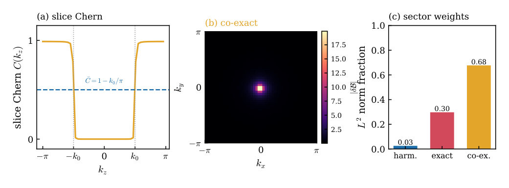
<figcaption class="paper-figure-caption"><b>Fig 1.</b> FIG. 1. Hodge decomposition of the Berry curvature in the lattice Weyl model, Eq. (5), with t = tz = 1, m = 2, k0 = π/2, on a half-offset Fourier grid of odd size N = 49, so that no node lies on a lattice point. (a) The slice Chern number C(kz) = (2π)−1 R Ωxy dkx dky (solid) steps by χn at each Weyl node; for the regularisation (5) the unit plateau occupies |kz| &gt; k0, the node separation taken through the zone boundary. Its kz-average ¯C = 1 −k0/π (dashed) is the harmonic sector, while the quantised steps are carried by the co-exact sector, because the exact (curl) part has zero flux through any closed slice. (b) The co-exact field magnitude |δB| on the kz slice adjacent to the node at +k0...</figcaption>
</figure>
<figure class="paper-figure-card">
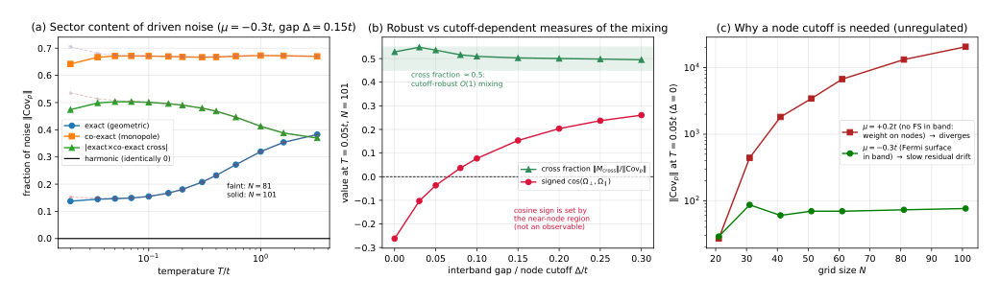
<figcaption class="paper-figure-caption"><b>Fig 2.</b> FIG. 2. Sector structure of the field-driven current noise in the lattice Weyl model, Eq. (5), at metallic filling µ = −0.3 t (valence band; by particle-hole symmetry this equals the conduction band at µ = +0.3 t). (a) Fraction of the noise-covariance norm ∥Covp∥carried by each Hodge sector versus temperature, at the physical interband gap ∆= 0.15 t that renders the curvature square-integrable; solid symbols N = 101, faint dashed N = 81 (they overlap, confirming convergence). The harmonic (topological) block is identically zero (Theorem 2); the fractions are norms of the blocks of Covp = Mex + Mco + Mcross and need not sum to one, the cross block being negative in the zz channel. (b) Robust...</figcaption>
</figure>
</div>

<p><strong>Summary.</strong> This paper uses the Hodge–de Rham decomposition to mathematically separate the contributions of topology, geometry, and monopoles within the Berry curvature governing electronic transport. By analyzing both mean currents and current noise fluctuations, the authors demonstrate a powerful separation principle allowing experimental measurement to distinguish global topological effects from local geometric ones.</p>
<p><strong>Why it may be interesting.</strong> The rigorous mathematical framework using Hodge theory to decompose physical quantities like Berry curvature is highly generalizable and provides powerful tools for classifying topological invariants in condensed matter systems beyond standard Chern numbers.</p>
<details>
<summary>Detailed structure</summary>
<p><strong>Main problem.</strong> To provide a unified framework for understanding Berry-phase transport by organizing the Berry curvature using the Hodge–de Rham decomposition, separating topological, geometric, and monopole contributions to both mean current response and noise fluctuations.</p>
<p><strong>Main result.</strong> The analysis establishes that in current-noise spectroscopy, global band topology (harmonic sector) can be cleanly separated from local band geometry (exact sector), while the co-exact sector is generally not a clean observable due to lack of conservation laws.</p>
<p><strong>Method.</strong> The core method involves applying the Hodge–de Rham decomposition ($\Omega = \gamma_{	ext{harmonic}} + dA_{	ext{exact}} + \delta B_{	ext{co-exact}}$) to the Berry curvature 2-form and analyzing transport moments using a particle-conserving stochastic Boltzmann equation constrained by the Fluctuation-Dissipation Theorem (FDT).</p>
<p><strong>Model / system.</strong> The study analyzes Bloch bands on the Brillouin torus ($T^d$) in two and three dimensions, utilizing lattice Weyl semimetal models for concrete calculations.</p>
<p><strong>Key observables.</strong> Anomalous Hall conductivity ($\sigma_{xy}$), Berry-curvature dipole, chiral anomaly, and zero-frequency current noise power $S(0)$.</p>
<p><strong>Important parameters / regimes.</strong> Dimensionality ($d=2, 3$), Temperature ($T$), Node cutoffs ($\Delta$).</p>
<p><strong>Assumptions / limitations.</strong> The analysis relies on the Hodge decomposition being applicable to $\Omega$, and that fluctuations are governed by a particle-conserving stochastic Boltzmann equation.</p>
<p><strong>Figures summary.</strong> Figures illustrate the Hodge decomposition in lattice Weyl models, showing sector weights; Figure 2 shows noise covariance components vs. temperature, confirming the harmonic block is zero.</p>
<p><strong>Paper structure.</strong> The paper systematically develops the Hodge dictionary for mean response (harmonic $\leftrightarrow$ AHE, exact $\leftrightarrow$ dipole, co-exact $\leftrightarrow$ chiral anomaly) and then extends this separation principle to current noise spectroscopy, proving that topology vs. geometry can be separated in fluctuations while noting limitations regarding the co-exact sector.</p>
</details>
<details>
<summary>Abstract</summary>
<p>We show that the Hodge-de Rham decomposition of the Berry curvature organises the transport of a Bloch band and its fluctuations within a single geometric structure. Splitting the curvature into $L^2$-orthogonal harmonic, exact, and co-exact sectors yields a dictionary for both moments of the current. In the mean response the harmonic sector carries the topological anomalous-Hall conductivity, the exact sector the Fermi-surface geometry and the antisymmetric Berry-curvature dipole of polar metals, and, in three dimensions, the co-exact sector the chiral anomaly, quantised by the Weyl-node charges. In the fluctuations, described by a particle-conserving stochastic Boltzmann equation constrained by the fluctuation-dissipation theorem (FDT), the harmonic sector is silent, so topological transport is noiseless, while the field-driven noise is sourced by the geometric sectors (solely the exact sector in two dimensions); current-noise spectroscopy therefore separates global band topology from local band geometry. We prove that the harmonic null-space protection is dimension-independent, and we settle the remaining sector: the co-exact (monopole) sector carries no conservation law and, under the thermal sampling measure, mixes with the exact sector at $\mathcal{O}(1)$, so it furnishes no clean noise observable. The separation the noise provides is therefore two-way, topology versus geometry, in both two and three dimensions.</p>
</details>
<p><sub><a href="#top">↑ back to top</a></sub></p>

<p><a id="paper-2608.14798"></a></p>
<h3 id="stabilizer-statistical-mechanics-a-framework-for-efficient-quantification-and-classification-of-magic-states"><a href="http://arxiv.org/abs/2608.14798v1">Stabilizer Statistical Mechanics: A Framework for Efficient Quantification and Classification of Magic States</a></h3>
<p><strong>Authors:</strong> William E. Salazar, Gaurav Saxena, Jack S. Baker, Leong Chuan Kwek, Thi Ha Kyaw<br>
<strong>Type:</strong> theory · <strong>Category:</strong> statistical mechanics · <strong>PDF:</strong> <a href="https://arxiv.org/pdf/2608.14798v1">https://arxiv.org/pdf/2608.14798v1</a><br>
<strong>Analysis basis:</strong> full PDF text, analyzed in chunks
<strong>Topic relevance:</strong> <code>analog quantum simulation</code> <strong>2/5</strong> · <code>driven-dissipative phase transition</code> <strong>2/5</strong> · <code>Keldysh / 2PI / non-Gaussian methods</code> <strong>1/5</strong> · <code>correlated / nonlocal dissipation</code> <strong>1/5</strong> · <code>methods for driven-dissipative</code> <strong>1/5</strong> · <code>quantum measurements</code> <strong>1/5</strong> · <code>scars &amp; prethermalization</code> <strong>1/5</strong></p>
<div class="figure-strip-hint">↔ Scroll figures horizontally</div>
<div class="paper-figures-scroll">
<figure class="paper-figure-card">
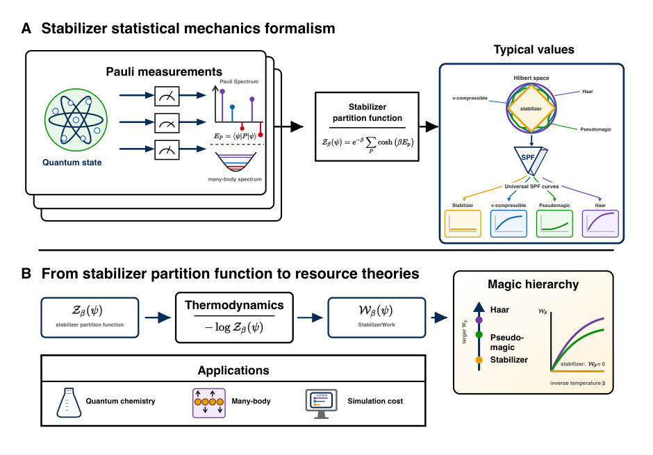
<figcaption class="paper-figure-caption"><b>Fig 1.</b> Figure 1. Overview of the stabilizer statistical mechanics framework. (A) A quantum state ψ is characterized by its Pauli spectrum, the collection of expectation values Tr[ψP] over all Pauli strings P. We reinterpret this exponentially large collection as the energy spectrum of a complex many-body system, the Pauli gas. The associated canonical partition function is the stabilizer partition function (SPF) Zβ (Definition 3), which compresses the full statistics of the Pauli spectrum into a single analytic function of an inverse-temperature-like parameter β, in the same way that a thermodynamic partition function encodes the statistics of microstates. The SPF is efficiently estimable by Bell...</figcaption>
</figure>
<figure class="paper-figure-card">
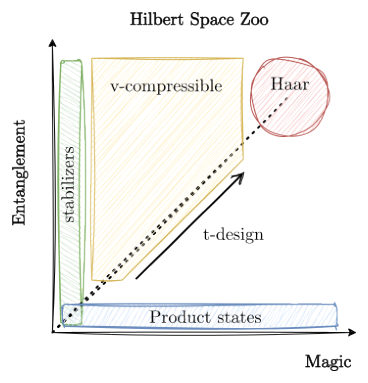
<figcaption class="paper-figure-caption"><b>Fig 2.</b> Figure 2. Stabilizer partition function across the Hilbert space zoo. For pure stabilizer states the SPF is uniquely valued and its given by Proposition 5. For separable states across every cut, their SPF is given by Proposition 8, and Theorem 6. Under generic many-body dynamics such as those present in chaotic systems or random quantum circuits, the states be- come Haar distributed with SPF given by Theorem 7. For the broad class of ν-compressible states, the SPF is given by Theorem 8. Finally, for psedudomagic states the SPF is given by Theorem 9.</figcaption>
</figure>
<figure class="paper-figure-card">
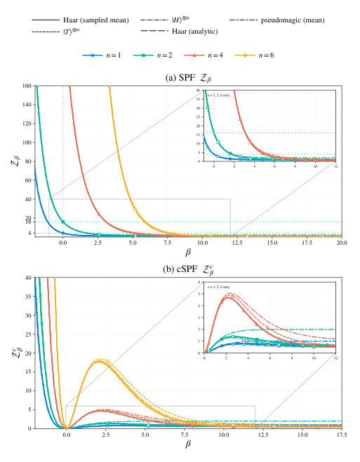
<figcaption class="paper-figure-caption"><b>Fig 3.</b> Figure 3. Plots of (a) Stabilizer Partition Function (SPF) and (b) core SPF (cSPF), for different quantum states with varying number of qubits, with respect to the real parameter β. At β = 0, the SPF’s value for any quantum state is equal to 4n. One may notice that as the number of qubits increase, the value of SPF/cSPF gets smaller than those for the lesser qubits for larger β. This is not a numerical artifact. It might be counterintuitive to see such a crossover, but since these are partition functions, it carries no meaning. When we normalize the cSPF and find the Stabilizer work, it becomes aligned with the intuition as shown later in Fig. 4.</figcaption>
</figure>
<figure class="paper-figure-card">

<figcaption class="paper-figure-caption"><b>Fig 4.</b> Figure 4. Stabilizer work as a function of the parameter β. Haar-random states form a narrowing concentration band as the number of qubits increases, reflecting the concentration of Pauli spectra in high-dimensional Hilbert spaces. Stabilizer work for pseudomagic states progressively approach that of the typical Haar states with increasing system size, making them increasingly difficult to distinguish from generic random states using coarse-grained observables. We also compare the tensor product families of |T⟩and |H⟩states where |T⟩⟨T| = (I + (X + Y )/ √</figcaption>
</figure>
<figure class="paper-figure-card">
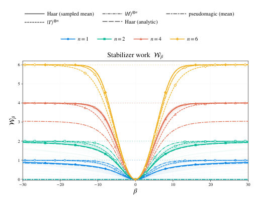
<figcaption class="paper-figure-caption"><b>Fig 5.</b> Figure 4 illustrates the dependence of stabilizer work on the parameter β for several families of quantum states. We now justify the properties listed above. Faithful- ness follows directly from the uniqueness of the cSPF for stabilizer states. Specifically, if ψ is a stabilizer state, then by construction Wβ(ψ) = 0. Conversely, if Wβ(ψ) = 0, then Zc β(ψ) must coincide with the unique stabilizer value, implying that ψ is a stabilizer state. Clif- ford invariance follows immediately from Proposition 4.</figcaption>
</figure>
</div>

<p><strong>Summary.</strong> This paper introduces Stabilizer Statistical Mechanics as a powerful resource theory framework to quantify 'magic' in quantum states. By treating the Pauli spectrum as an ensemble and constructing a canonical partition function, it derives the stabilizer work ($W_eta$). This monotone offers a unified, analytically tractable measure that surpasses single-moment diagnostics by capturing the full statistical structure of nonstabilizerness.</p>
<p><strong>Why it may be interesting.</strong> It provides a rigorous thermodynamic toolkit to characterize quantum resources (magic) that is sensitive to the full spectral structure of the state, which is highly relevant for understanding complex many-body dynamics beyond simple entanglement measures.</p>
<details>
<summary>Detailed structure</summary>
<p><strong>Main problem.</strong> The paper develops a statistical-mechanical framework to quantify 'magic' (nonstabilizerness) in quantum states, moving beyond single scalar measures.</p>
<p><strong>Main result.</strong> It introduces the stabilizer work ($W_eta$), a novel magic monotone that is analytically tractable and interpolates between known resource measures like Rényi entropy and nullity.</p>
<p><strong>Method.</strong> The core method involves mapping the Pauli spectrum of a quantum state onto an effective energy spectrum (the 'Pauli gas') and constructing a canonical partition function from it.</p>
<p><strong>Model / system.</strong> The analysis applies to general $n$-qubit quantum states, with specific demonstrations on low-rank stabilizer simulation, molecular ground states ($    ext{H}_2$ dissociation), and pseudomagic systems.</p>
<p><strong>Key observables.</strong> Stabilizer Partition Function ($Z_eta$), Stabilizer Work ($W_eta$), Pauli Spectrum ($  ext{Spec}(\psi)$), and various Rényi entropies ($M_\alpha$).</p>
<p><strong>Important parameters / regimes.</strong> The inverse-temperature-like parameter $eta$ acts as a 'resolution knob' controlling the interpolation between different measures.</p>
<p><strong>Assumptions / limitations.</strong> The framework assumes that nonstabilizerness can be captured by treating the entire Pauli spectrum as an ensemble, which is superior to single moment probes. Basis set dependence in molecular calculations is noted as a limitation.</p>
<p><strong>Figures summary.</strong> Figures illustrate the mapping from quantum states to the Pauli gas energy spectrum and the derivation of $W_eta$. Numerical results compare theoretical ensemble averages against sampled densities for various state types.</p>
<p><strong>Paper structure.</strong> The paper builds conceptually by first establishing the need for a distribution-sensitive measure, then constructing the SPF via statistical mechanics analogies, deriving the work monotone $W_eta$, and finally validating this framework across diverse physical examples like molecular dissociation.</p>
</details>
<details>
<summary>Abstract</summary>
<p>The partition function is statistical mechanics' answer to an exponentially large spectrum, distilling it into a single analytic object whose temperature dependence resolves the full structure of the underlying ensemble. We show that magic, the resource separating universal quantum computation from classically simulable stabilizer dynamics, admits precisely such a description. Mapping the Pauli spectrum of a quantum state onto the energy levels of a fictitious many-body system, the Pauli gas, we construct its canonical partition function, the stabilizer partition function, and from its associated free energy a magic monotone that we call the stabilizer work. Both these objects are analytic functions of an inverse-temperature-like parameter and are efficiently estimable via Bell sampling. The framework is analytically tractable. We derive exact ensemble-averaged partition functions for Haar-random, $ν$-compressible, and pseudomagic states, together with concentration guarantees. We show that for every value of its parameter, the stabilizer work is a faithful, Subadditive magic monotone, while remaining efficiently accessible on quantum hardware and admitting an operational interpretation. Unlike measures that probe a single moment of the Pauli distribution, the stabilizer work is intrinsically moment-generating. As the temperature is tuned from high to low, it interpolates continuously between the stabilizer 2-Rényi entropy and the stabilizer nullity, revealing two previously disconnected monotones as limiting cases of a single object. We demonstrate the framework on low-rank stabilizer simulation, resource interconversion, molecular ground states, and quantum many-body systems. A thermodynamics of magic is therefore not merely an analogy but a working toolkit, opening a statistical-mechanical route to magic properties of quantum systems that no single measure can access.</p>
</details>
<p><sub><a href="#top">↑ back to top</a></sub></p>

<p><a id="paper-2608.16702"></a></p>
<h3 id="time-optimal-quantum-gates-with-bang-bang-control-in-multilevel-systems"><a href="http://arxiv.org/abs/2608.16702v1">Time-optimal quantum gates with bang-bang control in multilevel systems</a></h3>
<p><strong>Authors:</strong> Valentín Reparaz, Santiago Ferreyra, María José Sánchez, Daniel Domínguez, Leandro Tosi<br>
<strong>Type:</strong> theory · <strong>Category:</strong> quantum information and computing · <strong>PDF:</strong> <a href="https://arxiv.org/pdf/2608.16702v1">https://arxiv.org/pdf/2608.16702v1</a><br>
<strong>Analysis basis:</strong> full PDF text, analyzed in chunks
<strong>Topic relevance:</strong> <code>QC/QI experiment</code> <strong>2/5</strong> · <code>driven-dissipative phase transition</code> <strong>2/5</strong> · <code>Keldysh / 2PI / non-Gaussian methods</code> <strong>1/5</strong> · <code>correlated / nonlocal dissipation</code> <strong>1/5</strong> · <code>methods for driven-dissipative</code> <strong>1/5</strong> · <code>quantum measurements</code> <strong>1/5</strong></p>
<div class="figure-strip-hint">↔ Scroll figures horizontally</div>
<div class="paper-figures-scroll">
<figure class="paper-figure-card">
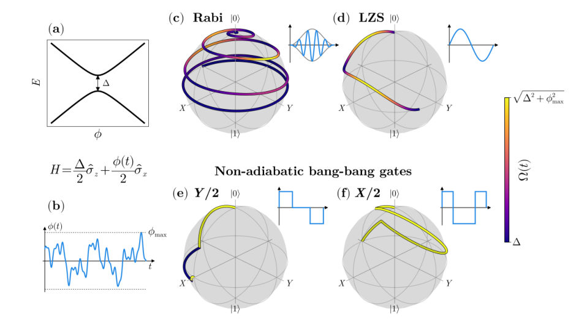
<figcaption class="paper-figure-caption"><b>Fig 1.</b> Figure 1. Single-qubit gate schemes under bounded transverse control. (a) Energy spectrum of a transversally driven two-level system with gap ∆. (b) The optimization problem: determining the time-optimal control field ϕ(t) bounded by ±ϕmax to execute a target π/2 gate. (c-f) Bloch sphere trajectories for the initial state |0⟩under different control schemes. Insets display the corresponding drive waveforms ϕ(t). The trajectory color maps the instantaneous rotation speed Ω(t) = p</figcaption>
</figure>
<figure class="paper-figure-card">
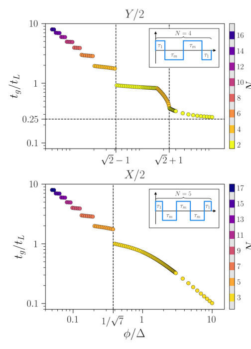
<figcaption class="paper-figure-caption"><b>Fig 2.</b> Figure 2. Time-optimal gates. Minimum gate time tg (nor- malized by the Larmor period τL = 2π/∆) as a function of drive amplitude ϕ/∆for Y/2 (top) and X/2 (bottom) rota- tions. Point color indicates the optimal number of bangs, N. For low amplitudes, N takes on higher values, recovering the resonant gate limit. Insets: Schematics of the optimal bang- bang protocols, illustrated for the specific cases of N = 4 (top) and N = 5 (bottom). Sequences alternate between am- plitudes ±ϕ, parameterized by outer bang durations τ1 and inner bang durations τm. Y/2 gates require an even N, while X/2 gates require an odd N. Dashed lines denote analyti- cally derived thresholds in the small-N regime. The...</figcaption>
</figure>
<figure class="paper-figure-card">
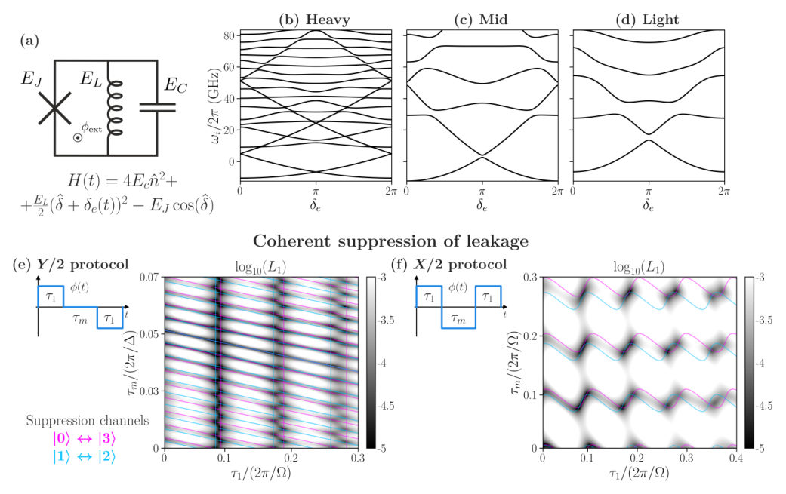
<figcaption class="paper-figure-caption"><b>Fig 3.</b> Figure 3. Beyond two levels: fluxonium regimes and coherent suppression of leakage. (a) Circuit diagram and Hamiltonian of the fluxonium qubit, controlled via an external magnetic flux parameterized as δe = 2πϕext/Φ0. (b-d) Energy spectra ωi versus external flux for three parameter regimes (EC/h, EL/h, EJ/h): (b) Heavy (0.479, 0.132, 3.395 GHz) yielding ∆/2π = 14 MHz and anharmonicity α = 214; (c) Mid (1.30, 0.59, 5.71 GHz) yielding ∆/2π = 222 MHz and α = 23; and (d) Light (1, 1, 4 GHz) yielding ∆/2π = 580 MHz and α = 5. Coherent suppression of leakage: (e-f) State-averaged leakage L1 for the heavy fluxonium under bang-bang (e) Y/2 and (f) X/2 protocols as a function of the normalized outer...</figcaption>
</figure>
<figure class="paper-figure-card">
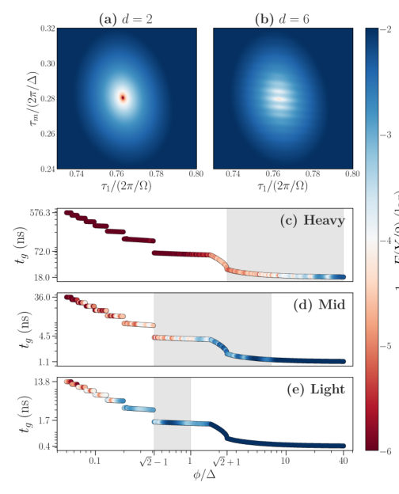
<figcaption class="paper-figure-caption"><b>Fig 4.</b> Figure 4. Effect of leakage in the optimization. (a) Color map of the Y/2 gate infidelity, log10(1 −F) as a function of τ1/(2π/Ω) and τm/(2π/∆) obtained for the unitary evolution of the Heavy fluxonium truncated to a two-level system and (b) for the full Hamiltonian, at a fixed drive amplitude of ϕ/∆= 20 and N = 2. (c-e) Optimized Y/2 total absolute gate time tg as a function of the effective transverse drive amplitude ϕ/∆across the Heavy, Mid and Light regimes of the fluxonium. The color of each point indicates the resulting fidelity. The shaded area indicates the amplitude region of interest for each fluxonium regime for the remainder of this work.</figcaption>
</figure>
<figure class="paper-figure-card">
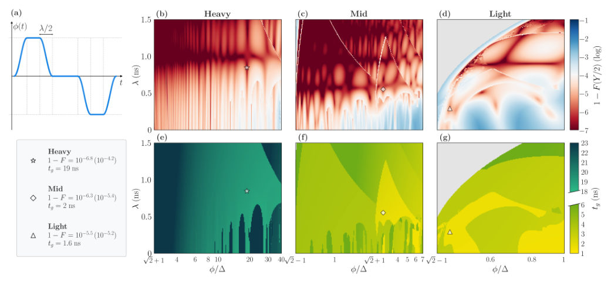
<figcaption class="paper-figure-caption"><b>Fig 5.</b> Figure 5. Smoothing and fluxonium Y/2 gates. (a) Schematic of the pulse smoothing protocol. Cosine ramps of width λ/2 are added at the bang transitions, increasing the total gate time by 2λ. (b-d) Optimized Y/2 gate infidelity, log10(1 −F), as a function of the effective transverse drive amplitude ϕ/∆and the smoothing parameter λ for the Heavy, Mid, and Light fluxonium regimes. High-fidelity solutions arise where the target coherent rotation coincides with the leakage suppression channels. (e-g) Corresponding optimal gate times tg. The numerical optimizer searches for the fastest protocol achieving an infidelity below 1−F ≤10−4; if this threshold is unreachable, it converges to the lowest...</figcaption>
</figure>
</div>

<p><strong>Summary.</strong> This paper determines the fastest possible way to execute quantum gates by employing time-optimal 'bang-bang' pulse sequences. Using advanced optimal control methods on models like the fluxonium circuit, the authors show these non-adiabatic pulses significantly outperform standard resonant controls in speed and fidelity. This is crucial for scaling up superconducting quantum processors.</p>
<p><strong>Why it may be interesting.</strong> This work provides concrete, theoretically derived protocols that push superconducting qubit platforms toward their fundamental speed limits by rigorously applying optimal control theory.</p>
<details>
<summary>Detailed structure</summary>
<p><strong>Main problem.</strong> The primary goal is determining the absolute quantum speed limit for implementing high-fidelity, fast single-qubit gates.</p>
<p><strong>Main result.</strong> The time-optimal pulse sequence required to achieve these fast gates is a 'bang-bang' sequence (discrete pulses of maximum amplitude or zero).</p>
<p><strong>Method.</strong> Optimal Control Theory (OCT) combined with Pontryagin’s Principle was used to derive the necessary control fields, which were then applied to model open system dynamics.</p>
<p><strong>Model / system.</strong> The study models quantum gates on superconducting circuits, initially using a Two-Level System (TLS) and extending to the Fluxonium circuit. The Hamiltonian is controlled by time-dependent external flux $\phi(t)$.</p>
<p><strong>Key observables.</strong> Gate fidelity ($F$), minimum gate duration ($t_g$), and leakage rate ($L_1$).</p>
<p><strong>Important parameters / regimes.</strong> Drive amplitude ($\phi_{	ext{max}}$) relative to the gap ($\Delta$); noise strength ($\sigma$) for $1/f$ flux noise.</p>
<p><strong>Assumptions / limitations.</strong> The analysis assumes that non-adiabatic control sequences are necessary for speedup, and open-system dynamics are modeled using Liouvillian evolution.</p>
<p><strong>Figures summary.</strong> Figures illustrate Bloch sphere trajectories comparing resonant vs. time-optimal bang-bang controls; another figure compares minimum gate time versus drive amplitude ratio ($\phi/\Delta$) across different bang structures.</p>
<p><strong>Paper structure.</strong> The paper progresses from deriving the optimal control theory for a simple TLS, extending this framework to complex multilevel systems like the fluxonium circuit, and finally simulating the performance under realistic noise models (e.g., $1/f$ flux noise).</p>
</details>
<details>
<summary>Abstract</summary>
<p>We determine the optimal quantum manipulation protocols for implementing high-fidelity, fast single-qubit gates. We demonstrate that the time-optimal pulse sequence is a ``bang-bang'' sequence: discrete pulses of either positive or negative maximum amplitude or zero. The non-adiabatic bang-bang pulse sequence minimizes gate duration providing a speedup for low-frequency architectures. We first derive the protocol for a transversally driven two-level system, extracting exact analytic expressions for minimum gate times. We then extend this framework to general multilevel architectures, identifying conditions that enable the coherent suppression of leakage errors. Using the fluxonium circuit as a representative case study, we optimize $X/2$ and $Y/2$ gates through a combination of discrete bang sequences and continuous waveform smoothing. This approach preserves near-optimal execution speeds while mitigating transitions outside the computational subspace. Open-system simulations demonstrate that these sequences outperform commensurate and resonant pulse schemes across different fluxonium regimes, achieving low-error manipulation significantly faster than standard resonant control, even in the presence of $1/f$ flux noise and dissipation.</p>
</details>
<p><sub><a href="#top">↑ back to top</a></sub></p>

<p><a id="paper-2608.16512"></a></p>
<h3 id="mompy-automated-construction-of-moment-matrices-for-semidefinite-programming-relaxations"><a href="http://arxiv.org/abs/2608.16512v1">MoMPy: automated construction of moment matrices for semidefinite programming relaxations</a></h3>
<p><strong>Authors:</strong> Carles Roch i Carceller<br>
<strong>Type:</strong> theory · <strong>Category:</strong> quantum information and computing · <strong>PDF:</strong> <a href="https://arxiv.org/pdf/2608.16512v1">https://arxiv.org/pdf/2608.16512v1</a><br>
<strong>Analysis basis:</strong> full PDF text, analyzed in chunks
<strong>Topic relevance:</strong> <code>analog quantum simulation</code> <strong>2/5</strong> · <code>quantum measurements</code> <strong>2/5</strong> · <code>Keldysh / 2PI / non-Gaussian methods</code> <strong>1/5</strong> · <code>methods for driven-dissipative</code> <strong>1/5</strong></p>
<div class="figure-strip-hint">↔ Scroll figures horizontally</div>
<div class="paper-figures-scroll">
<figure class="paper-figure-card">
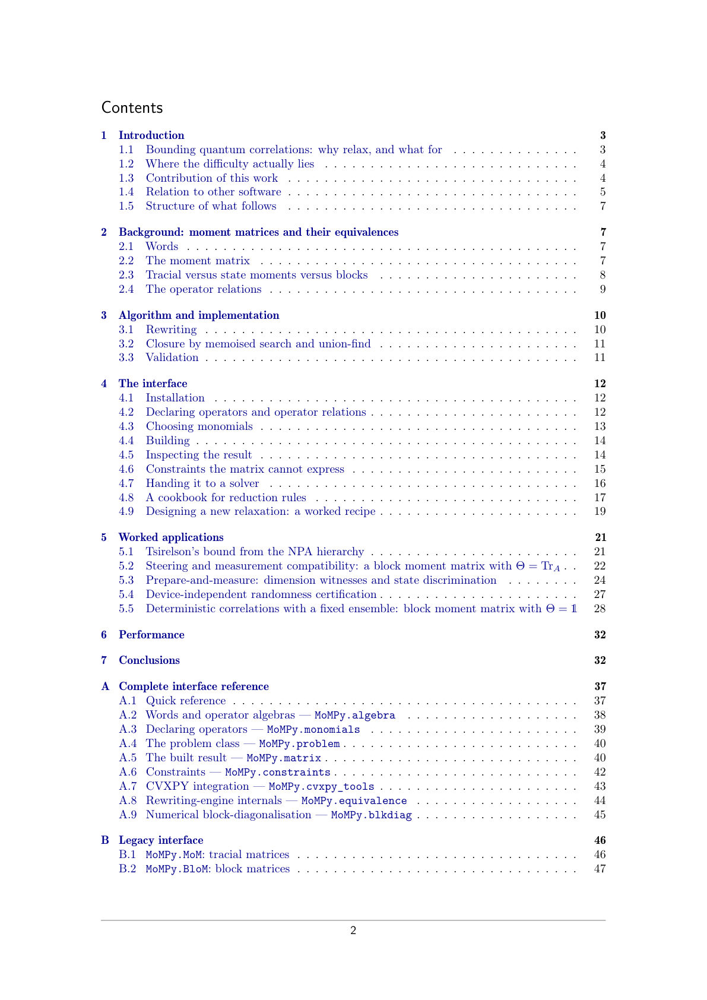
<figcaption class="paper-figure-caption"><b>Fig 1.</b> Low-resolution page preview, page 2</figcaption>
</figure>
<figure class="paper-figure-card">
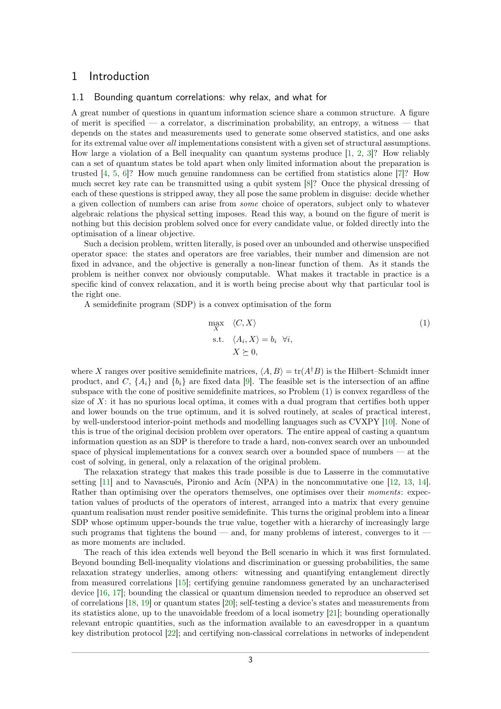
<figcaption class="paper-figure-caption"><b>Fig 2.</b> Low-resolution page preview, page 3</figcaption>
</figure>
<figure class="paper-figure-card">
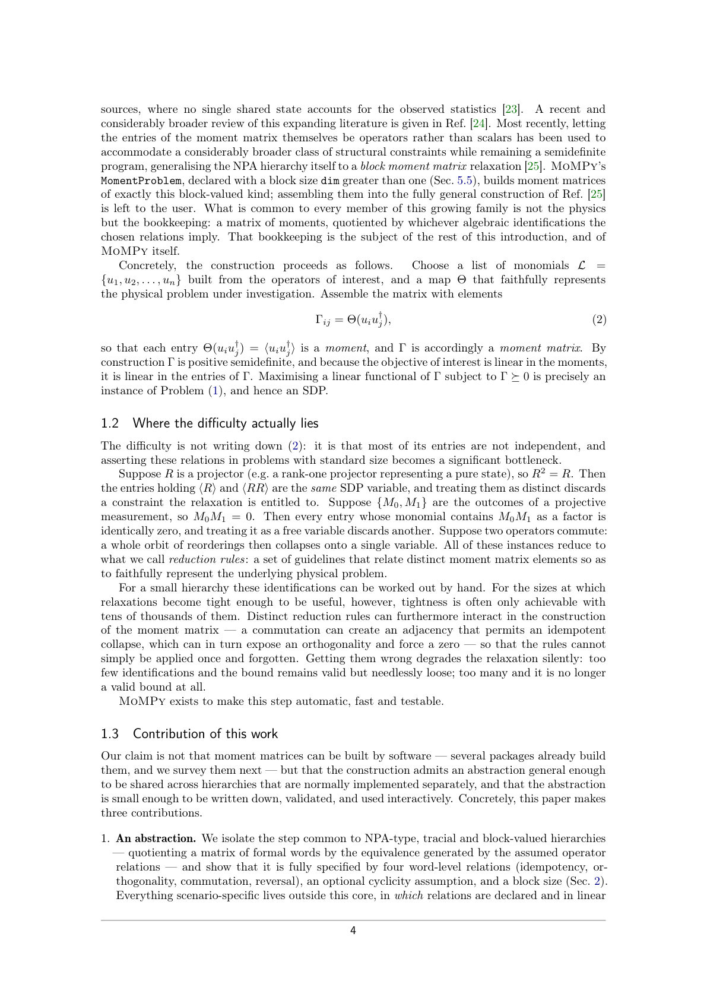
<figcaption class="paper-figure-caption"><b>Fig 3.</b> Low-resolution page preview, page 4</figcaption>
</figure>
<figure class="paper-figure-card">
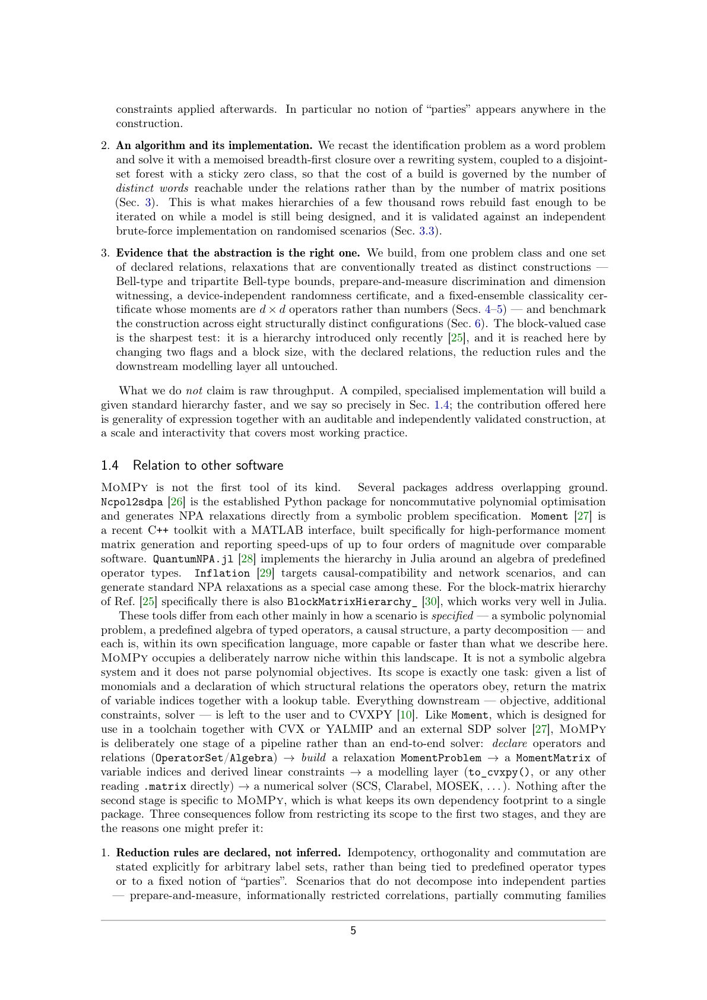
<figcaption class="paper-figure-caption"><b>Fig 4.</b> Low-resolution page preview, page 5</figcaption>
</figure>
<figure class="paper-figure-card">
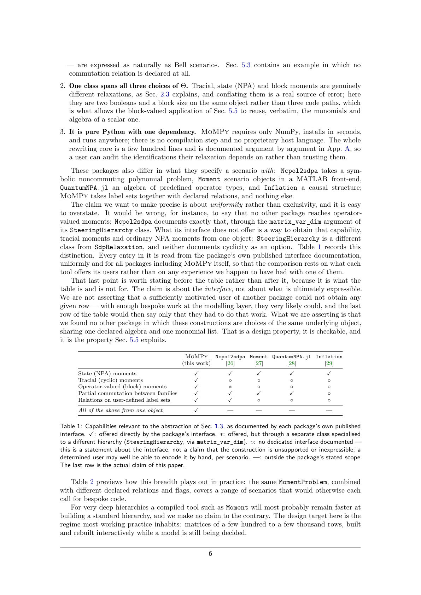
<figcaption class="paper-figure-caption"><b>Fig 5.</b> Low-resolution page preview, page 6</figcaption>
</figure>
</div>

<p><strong>Summary.</strong> This paper presents MoMPy, an open-source Python package that automates the construction of moment matrices necessary for solving quantum physics problems using Semidefinite Programming (SDP). It achieves remarkable generality by treating operator relations as a formal word-rewriting problem, allowing it to apply uniformly across diverse tasks like Bell tests and state discrimination. This provides a powerful computational tool for bounding physical quantities in quantum information theory.</p>
<p><strong>Why it may be interesting.</strong> While focused on general algebraic structure rather than specific Hamiltonian dynamics, the rigorous framework for handling complex constraints in high-dimensional moment problems is a powerful computational tool applicable to analyzing many-body systems via moments.</p>
<details>
<summary>Detailed structure</summary>
<p><strong>Main problem.</strong> The core problem is determining extremal values of physical quantities (like correlations or discrimination probabilities) subject to constraints derived from quantum measurements, which is formulated as an intractable decision problem.</p>
<p><strong>Main result.</strong> The authors introduce MoMPy, a general Python package that automates the construction of moment matrices required for solving these problems via Semidefinite Programming (SDP) relaxations.</p>
<p><strong>Method.</strong> It recasts the identification problem—handling algebraic relations between operators—as a word-rewriting system solved efficiently using memoised breadth-first closure and disjoint-set forest structures.</p>
<p><strong>Model / system.</strong> The framework is general, handling tracial, state (NPA), and block-valued moments for various quantum information tasks, including Bell tests, state discrimination, and randomness certification. It abstracts away specific physical settings like parties or preparations.</p>
<p><strong>Key observables.</strong> Moment matrices ($\Gamma$ or $\Theta$), the figure of merit being optimized (e.g., violation bound), and the resulting SDP variables.</p>
<p><strong>Important parameters / regimes.</strong> The structure is defined by operator labels and a set of structural relations (algebraic identifications).</p>
<p><strong>Assumptions / limitations.</strong> The primary assumption is that solving the problem via an SDP relaxation provides a tractable, albeit potentially looser, bound on the true physical value. The method relies on defining equivalence classes of monomials.</p>
<p><strong>Figures summary.</strong> Not specified in the notes; the focus is on algorithmic construction and validation across multiple structural scenarios.</p>
<p><strong>Paper structure.</strong> The paper introduces MoMPy to provide a unified, declarative way to build moment matrices for SDP relaxations. It details the underlying mathematical machinery (word-rewriting, closure) and demonstrates its generality by applying it to several distinct quantum information protocols.</p>
</details>
<details>
<summary>Abstract</summary>
<p>We present MoMPy, an open-source Python package that provides a unified, declarative construction of moment matrices for semidefinite programming (SDP) hierarchies. The user declares operator labels together with a small set of structural relations, and MoMPy returns a matrix of SDP variable indices in which every implied identification has already been made, ready for CVXPY or any other modelling layer. Internally, the identification problem is recast as a word-rewriting problem on tuples of integers and solved with a memoised breadth-first closure coupled to a disjoint-set forest, so that each distinct monomial is processed exactly once per build, however many matrix entries it eventually labels. The central abstraction is independent of the physical scenario: the same construction handles tracial, state (NPA), and block-valued moments, with no notion of parties, settings or preparations. We demonstrate this generality on a tripartite Mermin inequality, the bipartite CHSH inequality, measurement compatibility in a steering scenario, state discrimination and dimension witnessing in prepare-and-measure scenarios, device-independent randomness certification, and certification of deterministic correlations from known ensembles. The construction is validated against an independent brute-force implementation and benchmarked across eight structurally distinct scenarios, spanning bipartite and tripartite Bell tests, heterogeneous-outcome, steering-type, jointly-measurable and network configurations.</p>
</details>
<p><sub><a href="#top">↑ back to top</a></sub></p>

<p><a id="paper-2608.15120"></a></p>
<h3 id="the-math814math-expansion-for-long-range-lee-yang-and-percolation-criticality"><a href="http://arxiv.org/abs/2608.15120v1">The $6-ε$ Expansion for Long-Range Lee--Yang and Percolation Criticality</a></h3>
<p><strong>Authors:</strong> Zhiyi Li, Kun Chen, Zhijie Fan, Youjin Deng<br>
<strong>Type:</strong> theory · <strong>Category:</strong> statistical mechanics · <strong>PDF:</strong> <a href="https://arxiv.org/pdf/2608.15120v1">https://arxiv.org/pdf/2608.15120v1</a><br>
<strong>Analysis basis:</strong> full PDF text, analyzed in chunks
<strong>Topic relevance:</strong> <code>Keldysh / 2PI / non-Gaussian methods</code> <strong>2/5</strong> · <code>analog quantum simulation</code> <strong>1/5</strong> · <code>driven-dissipative phase transition</code> <strong>1/5</strong> · <code>methods for driven-dissipative</code> <strong>1/5</strong> · <code>non-equilibrium universality</code> <strong>1/5</strong></p>
<div class="figure-strip-hint">↔ Scroll figures horizontally</div>
<div class="paper-figures-scroll">
<figure class="paper-figure-card">
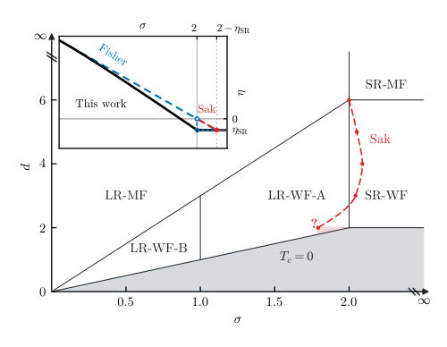
<figcaption class="paper-figure-caption"><b>Fig 1.</b> FIG. 1. Universality-class diagram for LR percolation in the (σ, d) plane. Each region denotes a universality class con- trolled by the indicated renormalization-group fixed point: LR and SR mean long-range and short-range, respectively; MF denotes mean field, and WF denotes the Wilson–Fisher fixed point. The two LR-WF sectors are separated at σ = 1: LR-WF-B is the σ &lt; 1 sector, where η = ηMF is rigorously established, and LR-WF-A is the 1 &lt; σ &lt; 2 sector. The boundaries d = 3σ, σ = 2, and d = 6 separate LR-MF from LR-WF, LR from SR, and SR-WF from SR-MF, respectively. The gray region lies below the lower critical dimension and has Tc = 0. In this scenario the LR–SR boundary is σ∗= 2 for all...</figcaption>
</figure>
</div>

<p><strong>Summary.</strong> This paper uses a $d=6-\epsilon$ renormalization group expansion on an effective $\phi^3$ field theory to study critical phenomena in percolation with long-range interactions. The authors successfully derive one-loop corrections for the critical exponents, demonstrating that the crossover between long-range and short-range universality classes occurs smoothly at $\sigma^*=2$. This resolves previous theoretical conflicts regarding the nature of this transition.</p>
<p><strong>Why it may be interesting.</strong> While focused on classical critical phenomena, the rigorous application of advanced field theory techniques (RG flow) to establish universal crossover behavior is a cornerstone technique applicable to quantum phase transitions in many-body systems.</p>
<details>
<summary>Detailed structure</summary>
<p><strong>Main problem.</strong> The paper addresses the long-standing theoretical problem of determining the crossover behavior between long-range (LR) and short-range (SR) criticality in percolation systems.</p>
<p><strong>Main result.</strong> The authors derive one-loop RG corrections showing that the critical exponents vary continuously across the crossover threshold at $\sigma^*=2$, resolving apparent discontinuities found in previous analyses.</p>
<p><strong>Method.</strong> They employ a perturbative Renormalization Group (RG) analysis using a $d = 6 - \epsilon$ expansion applied to an effective $\phi^3$ field theory.</p>
<p><strong>Model / system.</strong> The study models the critical behavior of percolation and Lee-Yang singularities using an $n$-component $\phi^3$ field theory, incorporating long-range interactions characterized by a power-law decay $J(r) \sim r^{-(d+\sigma)}$.</p>
<p><strong>Key observables.</strong> Critical exponents such as the anomalous dimension ($\eta$) and correlation-length exponent ($
u$).</p>
<p><strong>Important parameters / regimes.</strong> The interaction range parameter $\sigma$, the spatial dimension $d$ (analyzed via $\epsilon$), and the crossover threshold $\sigma^*=2$.</p>
<p><strong>Assumptions / limitations.</strong> The analysis is perturbative, valid for small $\epsilon$ and within a specific nonclassical regime ($0 < \delta < \epsilon/3$).</p>
<p><strong>Figures summary.</strong> Figure 1 illustrates the universality-class diagram in the $(\sigma, d)$ plane, comparing various theoretical predictions for the crossover region.</p>
<p><strong>Paper structure.</strong> The paper establishes the field-theoretic framework using an effective action involving $\phi^3$ terms. It then performs a one-loop RG analysis by calculating counterterms and deriving beta functions to determine the fixed points and exponents in the LR expansion, finally showing continuity across the SR limit.</p>
</details>
<details>
<summary>Abstract</summary>
<p>The crossover from long-range (LR) to short-range (SR) criticality in percolation has remained unsettled because previous renormalization-group (RG) analysis within the $ε'=3σ-d$ expansion fixes the anomalous dimension at $η=2-σ$, whereas SR percolation has $η_{\rm SR}<0$ near $d=6$. Sak's matching condition then places the crossover above $σ=2$, outside the regime in which the LR interaction dominates. In spatial dimension $d=6-ε$, we formulate a perturbative expansion for the LR $φ^3$ field theory and perform a one-loop RG analysis throughout the perturbatively accessible nonclassical regime $0<δ<ε/3$, where $δ= 2-σ$. We derive the one-loop corrections to the critical exponents $η$ and $ν$, which acquire nontrivial dependence on $ε$ and $δ$. They reduce to their mean-field values at the LR upper critical line and continuously recover the SR $6-ε$ results as $σ\to2$. These results support a crossover threshold $σ_*=2$ and remove the apparent discontinuity of $η$ between the LR and SR values within this framework. The same approach also yields the anomalous and edge exponents of the LR Lee--Yang universality class and $q$-state Potts universality classes with $q<2$.</p>
</details>
<p><sub><a href="#top">↑ back to top</a></sub></p>

<p><a id="paper-2608.16719"></a></p>
<h3 id="exact-mobility-rings-in-non-hermitian-quasiperiodically-decorated-lieb-lattices"><a href="http://arxiv.org/abs/2608.16719v1">Exact mobility rings in non-Hermitian quasiperiodically decorated Lieb lattices</a></h3>
<p><strong>Authors:</strong> Ming-Jie Tao, Yi-Ting Wang, Jing Li, Hongsheng Hou, Xiang-Ping Jiang, Lei Pan<br>
<strong>Type:</strong> theory · <strong>Category:</strong> disordered systems and neural networks · <strong>PDF:</strong> <a href="https://arxiv.org/pdf/2608.16719v1">https://arxiv.org/pdf/2608.16719v1</a><br>
<strong>Analysis basis:</strong> full PDF text, analyzed in chunks
<strong>Topic relevance:</strong> <code>driven-dissipative phase transition</code> <strong>2/5</strong> · <code>Frenkel-Kontorova</code> <strong>1/5</strong> · <code>Keldysh / 2PI / non-Gaussian methods</code> <strong>1/5</strong> · <code>methods for driven-dissipative</code> <strong>1/5</strong></p>
<div class="figure-strip-hint">↔ Scroll figures horizontally</div>
<div class="paper-figures-scroll">
<figure class="paper-figure-card">
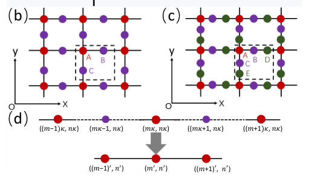
<figcaption class="paper-figure-caption"><b>Fig 1.</b> FIG. 1. Schematic illustration of the MEs, MRs and the 2D QDLL model. (a) Conceptual phase diagram in the complex energy plane. The solid red curve denotes the MR, which forms a closed boundary perfectly separating the extended states (interior) from the localized states (exterior). The dashed red lines illustrate the conventional MEs projected onto the real energy axis. (b) and (c) Structural representa- tions of the standard 2D Lieb lattice and the extended Lieb lattice, comprising three (labeled A, B, and C) and five (la- beled A through E) sub-lattices per unit cell, respectively. The complex quasiperiodic potentials are exclusively intro- duced at the vertex sites, highlighted as red...</figcaption>
</figure>
<figure class="paper-figure-card">
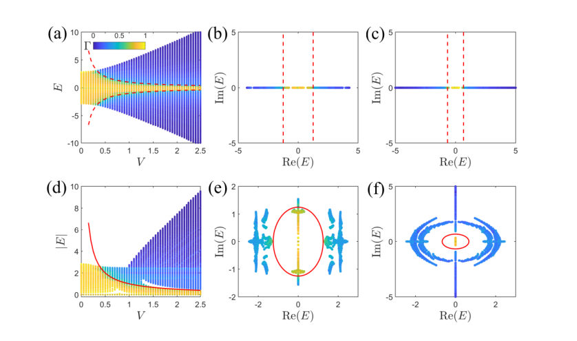
<figcaption class="paper-figure-caption"><b>Fig 2.</b> FIG. 2. Energy spectrum, mobility edges (MEs), and mobility rings (MRs) for the κ = 2 case. (a) Wavefunction fractal dimension Γ as a function of the quasiperiodic potential strength V and real eigenvalues E in the Hermitian limit (θ = 0). The red dashed lines denote the critical ME boundary |Ec| = 1/V , which separating from extended to localized states. (b), (c) Spectral distributions for V = 0.8 and V = 1.5 at θ = 0. (d) Complex energy spectrum and exact MR boundary |E| = 1/V (solid red curve) for the non-Hermitian case θ = π/2. (e), (f) Spectral phase diagrams in the complex energy plane for V = 0.8 and V = 1.5 at θ = π/2. The eigenstates within the MR are extended (Γ ≈1), while the...</figcaption>
</figure>
<figure class="paper-figure-card">
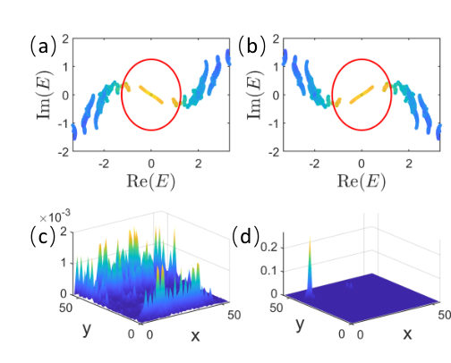
<figcaption class="paper-figure-caption"><b>Fig 3.</b> FIG. 3. The energy spectrum phase diagram and typical eigenstates distribution. (a)-(b) represent the 0.75π Frac- tal dimension η as a function of the quasiperiodic potential strength V and eigenvalues for (b) κ = 2 and (c) κ = 3 with the system size Lx = Ly = 34. The spatial distributions of two typical eigenstates with the corresponding complex eigen- values (c) The complex energy E = −0.9750 −0.2198i (ex- tended states) and (d) E = 3.2132−1.4185i (localized states), which are respectively below and above the MR (|Ec| = 1/V ) of the QDLL model with V = 1.0. Here the other parameters are the same as Fig.1.</figcaption>
</figure>
<figure class="paper-figure-card">
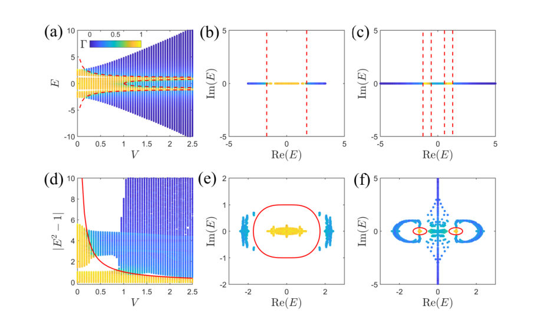
<figcaption class="paper-figure-caption"><b>Fig 4.</b> FIG. 4. Energy spectrum, mobility edges (MEs), and mobility rings (MRs) for the κ = 3 case. (a) Wavefunction fractal dimension Γ as a function of the quasiperiodic potential strength V and real eigenvalues E in the Hermitian limit (θ = 0). The red dashed lines denote the critical ME boundary Ec = ± p</figcaption>
</figure>
<figure class="paper-figure-card">
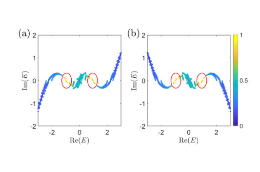
<figcaption class="paper-figure-caption"><b>Fig 5.</b> FIG. 5. The MRs for different θ for κ = 3 case. (a)-(b) represent the θ = π/4 and θ = 3π/4. Although the complex spectral features shift markedly with varying θ, the analytical sub-ring boundaries defined by Eq. (12) remain invariant.</figcaption>
</figure>
</div>

<p><strong>Summary.</strong> The paper analytically determines the Mobility Rings in complex two-dimensional quasiperiodic lattices by mapping them onto effective Aubry-André-Harper models. It establishes that these rings define the boundary between extended and localized electronic states, revealing a fascinating topological transition where the ring splits into multiple components depending on the lattice's decoration parameter.</p>
<p><strong>Why it may be interesting.</strong> This work provides rigorous analytical benchmarks in 2D non-Hermitian systems, which is crucial for understanding localization phenomena that are difficult to treat theoretically beyond 1D. The connection between topology (MR splitting) and lattice structure ($\kappa$) is highly relevant for designing synthetic quantum materials.</p>
<details>
<summary>Detailed structure</summary>
<p><strong>Main problem.</strong> The study focuses on understanding the mobility ring (MR), a critical boundary separating extended and localized states, particularly in non-Hermitian disordered systems beyond one dimension.</p>
<p><strong>Main result.</strong> The authors derived exact analytical expressions for the MRs in 2D quasiperiodically decorated Lieb lattices, revealing that the topology of this ring evolves dynamically based on the lattice decoration parameter $\kappa$ (e.g., splitting into two rings when $\kappa=3$).</p>
<p><strong>Method.</strong> The methodology involves exactly mapping the complex 2D structure onto an effective generalized Aubry-André-Harper model, followed by analytical derivation of Lyapunov exponents and utilizing transfer matrix formalisms.</p>
<p><strong>Model / system.</strong> The system is a two-dimensional (2D) quasiperiodically decorated Lieb lattice (QDLL) incorporating complex incommensurate potentials. The analysis uses the tight-binding Hamiltonian projected onto vertex sites, which is then mapped to an effective 1D/2D AAH model.</p>
<p><strong>Key observables.</strong> Mobility Ring (MR), Lyapunov exponents (LEs), wavefunction fractal dimension ($\Gamma$), and real-space probability distributions.</p>
<p><strong>Important parameters / regimes.</strong> $V$ (modulation amplitude), $\theta$ (complex phase factor), $\kappa$ (decoration parameter, e.g., 2 or 3), and incommensurate frequencies $\alpha_{x,y}$.</p>
<p><strong>Assumptions / limitations.</strong> The analysis assumes $t=1$ (unit energy) and fixes specific irrational values for the modulation frequencies ($\alpha_x = \alpha_y = (\sqrt{5}-1)/2$).</p>
<p><strong>Figures summary.</strong> Figures illustrate the conceptual phase diagram showing the MR boundary, structural representations of the lattice, and plots detailing the evolution of the MR topology (e.g., single ring vs. two sub-rings) as a function of potential strength $V$.</p>
<p><strong>Paper structure.</strong> The paper progresses by defining the physical system and Hamiltonian, developing an exact mapping to an effective AAH model using algebraic decimation, analytically deriving the critical conditions for the MRs via Lyapunov exponents, and finally demonstrating the topological phase transitions observed numerically.</p>
</details>
<details>
<summary>Abstract</summary>
<p>The mobility ring (MR), a critical boundary in the complex energy plane separating extended and localized states, is fundamental to understanding the Anderson transition in non-Hermitian (NH) disordered systems. While MRs have been extensively studied in one-dimensional (1D) NH quasiperiodic models, rigorous analytical frameworks beyond 1D remain critically scarce. Here, we investigate a class of two-dimensional (2D) quasiperiodically decorated Lieb lattices (QDLLs) featuring complex incommensurate potentials selectively applied to the lattice vertices. By exactly mapping these 2D structures onto NH generalized Aubry-Andr{é}-Harper (AAH) models and leveraging extended-localized transition point, we analytically derive the Lyapunov exponents and obtain exact expressions for the MRs. These exact theoretical boundaries are strongly corroborated by numerical computations of wavefunction fractal dimensions and real-space probability distributions. Furthermore, we reveal distinct evolutionary behaviors of the MRs driven by the quasiperiodic potential strength: systems characterized by $κ=2$ possess a single MR, whereas systems with $κ=3$ undergo a dynamic sequential evolution from a single integrated ring into two independent rings. We hope that our exact results of MRs in 2D will benefit the study of Anderson localizations and MRs in high-dimensional NH systems.</p>
</details>
<p><sub><a href="#top">↑ back to top</a></sub></p>

<p><a id="paper-2608.15620"></a></p>
<h3 id="finite-energy-gkp-qpc-architectures-for-photonic-quantum-memories-and-repeaters"><a href="http://arxiv.org/abs/2608.15620v1">Finite-energy GKP-QPC architectures for photonic quantum memories and repeaters</a></h3>
<p><strong>Authors:</strong> Kaustav Chatterjee, Ulrik Lund Andersen<br>
<strong>Type:</strong> theory · <strong>Category:</strong> quantum information and computing · <strong>PDF:</strong> <a href="https://arxiv.org/pdf/2608.15620v1">https://arxiv.org/pdf/2608.15620v1</a><br>
<strong>Analysis basis:</strong> full PDF text, analyzed in chunks
<strong>Topic relevance:</strong> <code>quantum measurements</code> <strong>2/5</strong> · <code>driven-dissipative phase transition</code> <strong>1/5</strong> · <code>methods for driven-dissipative</code> <strong>1/5</strong> · <code>quantum optics experiment</code> <strong>1/5</strong></p>
<div class="figure-strip-hint">↔ Scroll figures horizontally</div>
<div class="paper-figures-scroll">
<figure class="paper-figure-card">

<figcaption class="paper-figure-caption"><b>Fig 1.</b> Figure 1. Conceptual structure of the finite-squeezing GKP- QPC architecture. Each physical rail is a finitely squeezed GKP qubit (input) transmitted through a pure-loss fiber seg- ment and corrected by teleportation-based GKP error correc- tion using finitely squeezed GKP Bell resources. The mn rails represent the physical redundancy of the outer QPC(n, m) code. The continuous homodyne syndromes are converted into effective rail-level Pauli error marginals, which are then decoded by an outer QPC. The same elementary module can be repeated in time to form an all-optical quantum memory or concatenated in space to form a one-way quantum repeater.</figcaption>
</figure>
<figure class="paper-figure-card">

<figcaption class="paper-figure-caption"><b>Fig 2.</b> Figure 2. Circuit diagram for a single round of error cor- rection with QPC(2, 2), generalizable to QPC(n, m). Each physical rail undergoes teleportation-based GKP error cor- rection. The corresponding homodyne outcome is classically coarse-grained into sector signs, which are fed into the outer QPC decoder [11]. The resulting logical Pauli-frame update can either be tracked classically or implemented by the corre- sponding logical feed-forward displacement. The arrows are 50-50 beam-splitters.</figcaption>
</figure>
<figure class="paper-figure-card">

<figcaption class="paper-figure-caption"><b>Fig 3.</b> Figure 3. Logical failure probability for the GKP–QPC(n, m) concatenated code at zero propagation loss (η = 1), as a func- tion of GKP squeezing. For each repetition number m the block size n is optimized to minimize the failure probabil- ity. The crossing of the curves identifies the finite-squeezing threshold at 5.06 dB.</figcaption>
</figure>
<figure class="paper-figure-card">

<figcaption class="paper-figure-caption"><b>Fig 4.</b> Figure 4. Optimal segment length as a function of GKP squeezing. The threshold below which repeated error cor- rection provides no advantage shifts towards lower squeezing as the outer QPC code size increases: from 6.7 dB (no QPC) to 5.2 dB with QPC(3, 3) and 4.3 dB with QPC(5, 5).</figcaption>
</figure>
<figure class="paper-figure-card">

<figcaption class="paper-figure-caption"><b>Fig 5.</b> Figure 5. Average fidelity of the quantum memory with GKP– QPC(5, 5) as a function of GKP squeezing and storage time ts. Fidelities are computed using the optimal segment lengths from Fig. 4.</figcaption>
</figure>
</div>

<p><strong>Summary.</strong> The paper proposes a concatenated error correction scheme using GKP qubits followed by an outer Quantum Parity Code to protect photonic quantum information transmitted through lossy fibers. It quantifies the performance gains, showing that this architecture significantly boosts memory fidelity and communication distance compared to simpler methods. The results provide essential design guidelines for building practical quantum repeaters.</p>
<p><strong>Why it may be interesting.</strong> This work provides concrete, resource-aware design rules for scaling quantum communication over realistic noisy channels (pure loss), which is crucial for implementing quantum internet technologies.</p>
<details>
<summary>Detailed structure</summary>
<p><strong>Main problem.</strong> Developing error-correction architectures for photonic quantum networks that remain useful with finite-energy bosonic states, pure-loss fiber transmission, and explicit resource accounting.</p>
<p><strong>Main result.</strong> The concatenated GKP-QPC architecture significantly improves memory fidelity and extends communication reach by orders of magnitude compared to non-repeater methods, providing quantitative design rules for practical quantum networks.</p>
<p><strong>Method.</strong> The study employs a theoretical model combining continuous-variable Gottesman–Kitaev–Preskill (GKP) error correction with an outer Quantum Parity Code (QPC) decoder to counteract noise induced by pure-loss fiber transmission.</p>
<p><strong>Model / system.</strong> The system models photonic quantum memories and one-way repeaters using finitely squeezed GKP qubits transmitted through a pure-loss channel, followed by concatenated error correction layers (GKP $
ightarrow$ QPC).</p>
<p><strong>Key observables.</strong> Average-fidelity ratio improvement (up to 90%), secret-key fractions, and communication reach ($\sim 10^4$ km).</p>
<p><strong>Important parameters / regimes.</strong> Finite squeezing level ($\epsilon$), transmissivity of the loss channel ($\eta$), and code parameters ($QPC(n, m)$).</p>
<p><strong>Assumptions / limitations.</strong> The analysis relies on modeling pure-loss channels and utilizes product-marginal closure assumptions for deriving logical Pauli error probabilities.</p>
<p><strong>Figures summary.</strong> Figures illustrate the conceptual architecture (GKP $
ightarrow$ Loss $
ightarrow$ QPC), plot the logical failure probability vs. squeezing, and show gains in secret-key rates versus code parameters/distance.</p>
<p><strong>Paper structure.</strong> The paper builds from defining the physical problem (finite energy, loss) to detailing the concatenated GKP-QPC structure, deriving error probabilities using product-marginal closure, and finally presenting quantitative results for memory fidelity and repeater key rates.</p>
</details>
<details>
<summary>Abstract</summary>
<p>Photonic quantum networks require error-correction architectures that remain useful with finite-energy bosonic states, pure-loss fiber transmission, and explicit resource accounting. In this light, we study a concatenated architecture in which each physical rail is a finitely squeezed Gottesman--Kitaev--Preskill (GKP) qubit transmitted through a pure-loss fiber segment, corrected by teleportation-based GKP error correction with finitely squeezed ancillae, and decoded by an outer quantum parity code (QPC). The GKP layer converts continuous homodyne syndromes into effective rail-level Pauli marginals, while the QPC layer suppresses the residual qubit-level errors. For the concatenated code family considered here, we find a finite-squeezing threshold of $5.06\,\mathrm{dB}$ at zero propagation loss. In the memory setting, the QPC layer lowers the squeezing at which repeated error correction becomes beneficial from $6.7\,\mathrm{dB}$ for bare GKP correction to $5.2\,\mathrm{dB}$ for QPC$(3,3)$ and $4.3\,\mathrm{dB}$ for QPC$(5,5)$, and improves the average-fidelity ratio by up to $75$--$90\%$ in the relevant intermediate-noise regime. In the repeater setting, avoiding pre-amplification gives larger secret-key fractions at moderate squeezing, but also produces an optimal squeezing because highly squeezed GKP peaks become sensitive to loss-induced inward displacement. Resource-normalized rates show that QPC concatenation can exceed the repeaterless PLOB benchmark by orders of magnitude and extend the communication reach, at short repeater spacing, to distances of order $10^4$km with $14$dB squeezing. However, QPC concatenation becomes detrimental when each elementary hop is too lossy. These results provide quantitative design rules for finite-squeezing GKP--QPC quantum memories and repeaters.</p>
</details>
<p><sub><a href="#top">↑ back to top</a></sub></p>

<p><a id="paper-2608.16292"></a></p>
<h3 id="quantum-wave-particle-duality-in-free-electron-free-electron-entanglement"><a href="http://arxiv.org/abs/2608.16292v1">Quantum Wave-Particle Duality in Free-Electron--Free-Electron Entanglement</a></h3>
<p><strong>Authors:</strong> Du Ran, Jing-Yi Liu, Dan Jin, Peng-Yu Su, Reuven Ianconescu, Shuai Liu, Avraham Gover<br>
<strong>Type:</strong> theory · <strong>Category:</strong> other · <strong>PDF:</strong> <a href="https://arxiv.org/pdf/2608.16292v1">https://arxiv.org/pdf/2608.16292v1</a><br>
<strong>Analysis basis:</strong> full PDF text, analyzed in chunks
<strong>Topic relevance:</strong> <code>analog quantum simulation</code> <strong>2/5</strong> · <code>correlated / nonlocal dissipation</code> <strong>1/5</strong> · <code>interference shaping light</code> <strong>1/5</strong> · <code>quantum measurements</code> <strong>1/5</strong></p>
<div class="figure-strip-hint">↔ Scroll figures horizontally</div>
<div class="paper-figures-scroll">
<figure class="paper-figure-card">

<figcaption class="paper-figure-caption"><b>Fig 1.</b> FIG. 1. System model for free-electron–free-electron entan- glement. Two initially separable quantum electron wave pack- ets propagate with mean velocity v0 along spatially distinct paths A and B. Their transverse separation b(t) reaches the minimum value b0 near closest approach, while σA, σB, and ∆(t) denote the longitudinal wave-packet widths and centroid mismatch. The enlarged interaction region shows the longitu- dinal degrees of freedom and the bipartition HA ⊗HB, where the accumulated nonlocal interaction phase generates an en- tangled output state.</figcaption>
</figure>
<figure class="paper-figure-card">

<figcaption class="paper-figure-caption"><b>Fig 2.</b> FIG. 2. Wave-packet-size dependence, quadratic scaling, and drift control of free-electron–free-electron entanglement. (a) Logarithmic negativity EN versus the normalized longitudi- nal width σz/b0 for b0 = 300 nm and τb = 200 fs. The solid line gives the quadratic analytical prediction, and the symbols show full TDSE results. (b) Logarithmic negativity versus Γee for three interaction geometries. The solid line denotes Eq. (3), and the symbols show the corresponding full TDSE results. (c) Free longitudinal spreading of a QEW initially prepared with spatial width σ0 and momentum width σq0. The spatial width increases with LD/LR, while the momen- tum width remains unchanged. (d) Logarithmic...</figcaption>
</figure>
<figure class="paper-figure-card">

<figcaption class="paper-figure-caption"><b>Fig 3.</b> FIG. 3. Quadratic entanglement node and higher-order Coulomb entanglement. (a) Logarithmic negativity EN ver- sus the normalized centroid mismatch δ = γ∆/b0 for σz/b0 = 0.12. The quadratic analytical result vanishes at the finite- window node marked by the vertical dashed line, while the full TDSE result remains finite. (b) Wave-packet-size depen- dence at the quadratic node. The quadratic contribution re- mains zero, whereas the full TDSE result increases with σz/b0. (c) Log-log dependence of the residual entanglement in the narrow-QEW regime. The fitted exponent p ≃3.09 agrees closely with the cubic reference p = 3. All calculations use b0 = 300 nm, τb = 200 fs, and a mean electron...</figcaption>
</figure>
</div>

<p><strong>Summary.</strong> This theoretical paper connects the physical concept of free-electron wave packet size to bipartite entanglement generated by Coulomb interaction. By solving the time-dependent Schrödinger equation, the authors show that entanglement scales with the square of the QEW width, providing a novel mechanism for controlling quantum correlations using spatial wave-packet engineering.</p>
<p><strong>Why it may be interesting.</strong> This work bridges fundamental concepts from quantum optics (wave-particle duality) into condensed matter/quantum information by showing that a geometric property of the electron wave function directly controls measurable quantum correlations (entanglement).</p>
<details>
<summary>Detailed structure</summary>
<p><strong>Main problem.</strong> The study aims to establish a direct, quantifiable link between the free-electron wave-particle duality—characterized by the longitudinal extent of the quantum wave packet (QEW)—and the bipartite entanglement generated via mutual electromagnetic coupling.</p>
<p><strong>Main result.</strong> The entanglement strength scales directly with the square of the QEW width ($\Gamma_{	ext{ee}} \propto \sigma_z^2$), demonstrating that spatial control over the free electron wave packet can govern quantum correlations. Furthermore, higher-order effects reveal a finite entangling channel even when the quadratic term vanishes.</p>
<p><strong>Method.</strong> The research employs analytical approximations (quadratic phase gate) combined with numerical solutions of the time-dependent Schrödinger equation (TDSE) using split-operator FFT methods to calculate entanglement measures like logarithmic negativity ($E_N$).</p>
<p><strong>Model / system.</strong> The model consists of two free electrons propagating along spatially separated paths, interacting via a Coulomb potential. The system dynamics are governed by the TDSE, which is analyzed in terms of center-of-mass and relative coordinates.</p>
<p><strong>Key observables.</strong> Logarithmic Negativity ($E_N$), Dimensionless entangling parameter ($\Gamma_{	ext{ee}}$), Longitudinal QEW width ($\sigma_z$).</p>
<p><strong>Important parameters / regimes.</strong> QEW longitudinal width ($\sigma_z$), Free drift length ($L_D$), Interaction potential parameters ($\gamma$, $\Delta$).</p>
<p><strong>Assumptions / limitations.</strong> The analysis assumes spatially separated propagation modes and that interaction-induced transverse displacements are small compared to path separation.</p>
<p><strong>Figures summary.</strong> Figures illustrate the dependence of entanglement on QEW width, scaling with the effective entangling parameter; they also show how free drift expands the wave packet while maintaining momentum distribution, and compare quadratic vs. full TDSE results at specific nodes.</p>
<p><strong>Paper structure.</strong> The paper progresses by first establishing the model using the Hamiltonian and TDSE. It then derives analytical scalings based on the quadratic interaction phase, confirms these with numerical simulations across varying QEW widths, and finally explores how free drift and higher-order terms modify this entanglement scaling.</p>
</details>
<details>
<summary>Abstract</summary>
<p>Point-particle descriptions of electron-electron interaction omit the coherent longitudinal extent of a free-electron quantum wave packet (QEW). A relativistic two-electron wave-packet theory identifies the longitudinal QEW size as a direct control parameter for entanglement generated by mutual electromagnetic coupling. For two electrons in spatially separated paths, the quadratic interaction phase gives a dimensionless entangling parameter $\Gee$ and the logarithmic negativity $\EN=\operatorname{arsinh}(\Gee)/\ln2$. Full time-dependent Schrödinger equation calculations confirm the scaling for narrow QEWs and reveal higher-order Coulomb effects at larger spatial extent. Free drift increases the interaction-point QEW width while preserving the momentum probability distribution, thereby enhancing the subsequently generated entanglement. The results establish a direct connection between free-electron wave-particle duality and bipartite entanglement.</p>
</details>
<p><sub><a href="#top">↑ back to top</a></sub></p>

<p><a id="paper-2608.16568"></a></p>
<h3 id="scientific-applications-of-quantum-computing-challenges-and-opportunities"><a href="http://arxiv.org/abs/2608.16568v1">Scientific applications of quantum computing: challenges and opportunities</a></h3>
<p><strong>Authors:</strong> Bruno Camino, C. Richard A. Catlow, John Buckeridge, Alin M. Elena, Vladimir V. Gusev, Sarah Harris, Thomas W. Keal, Glenn Jones, Vivien Kendon, Syma Khalid, Phalgun Lolur, Jamal A. Nasir, Matthew J. Rosseinsky, Chris-Kriton Skylaris, Paul A. Warburton, Scott M. Woodley<br>
<strong>Type:</strong> theory · <strong>Category:</strong> other · <strong>PDF:</strong> <a href="https://arxiv.org/pdf/2608.16568v1">https://arxiv.org/pdf/2608.16568v1</a><br>
<strong>Analysis basis:</strong> full PDF text, analyzed in chunks
<strong>Topic relevance:</strong> <code>analog quantum simulation</code> <strong>2/5</strong> · <code>Keldysh / 2PI / non-Gaussian methods</code> <strong>1/5</strong> · <code>methods for driven-dissipative</code> <strong>1/5</strong> · <code>quantum measurements</code> <strong>1/5</strong></p>
<div class="figure-strip-hint">↔ Scroll figures horizontally</div>
<div class="paper-figures-scroll">
<figure class="paper-figure-card">

<figcaption class="paper-figure-caption"><b>Fig 1.</b> Low-resolution page preview, page 2</figcaption>
</figure>
<figure class="paper-figure-card">

<figcaption class="paper-figure-caption"><b>Fig 2.</b> Low-resolution page preview, page 3</figcaption>
</figure>
<figure class="paper-figure-card">

<figcaption class="paper-figure-caption"><b>Fig 3.</b> Low-resolution page preview, page 4</figcaption>
</figure>
<figure class="paper-figure-card">

<figcaption class="paper-figure-caption"><b>Fig 4.</b> Low-resolution page preview, page 5</figcaption>
</figure>
<figure class="paper-figure-card">

<figcaption class="paper-figure-caption"><b>Fig 5.</b> Low-resolution page preview, page 6</figcaption>
</figure>
</div>

<p><strong>Summary.</strong> This review discusses how quantum computing can revolutionize the simulation of molecules and materials by tackling limitations in treating electronic correlation. It argues that while quantum methods offer a paradigm shift, their immediate value lies not in replacing classical tools entirely, but in acting as specialized accelerators within integrated computational workflows.</p>
<p><strong>Why it may be interesting.</strong> It provides a high-level roadmap connecting fundamental quantum computation concepts to concrete, complex problems in molecular physics and condensed matter theory, emphasizing the crucial role of hybrid algorithms.</p>
<details>
<summary>Detailed structure</summary>
<p><strong>Main problem.</strong> Predictive simulation of molecules and materials is fundamentally limited by accurately treating electronic correlation, excited states, and complex energy landscapes using classical methods.</p>
<p><strong>Main result.</strong> Quantum computing offers a paradigm shift for these simulations, but near-term value requires disciplined workflow integration rather than wholesale replacement of existing classical methods.</p>
<p><strong>Method.</strong> The paper reviews quantum simulation approaches (e.g., VQE, direct Hamiltonian simulation) and argues for their utility as specialized accelerators within hybrid computational ecosystems.</p>
<p><strong>Model / system.</strong> The focus is on chemical systems, molecules, and materials ranging from enzymatic catalysis to solid-state decomposition, governed by electronic Hamiltonians.</p>
<p><strong>Key observables.</strong> Thermodynamics (free-energy differences), kinetics (activation barriers), computed energies, rates, spectra, or material stability.</p>
<p><strong>Important parameters / regimes.</strong> Chemical accuracy ($\sim$ tens of meV); the full computational cost including state preparation and error handling is critical for assessing true advantage.</p>
<p><strong>Assumptions / limitations.</strong> The central assumption is that quantum computation can provide a genuine scientific advantage by overcoming classical limitations in correlation treatment, provided hardware maturity matches algorithmic needs.</p>
<p><strong>Paper structure.</strong> The paper establishes the computational bottleneck (correlation/excited states), reviews various quantum simulation methods (analog vs. digital), discusses specific applications across chemistry and materials science, and concludes by defining the necessary criteria for achieving demonstrable scientific value.</p>
</details>
<details>
<summary>Abstract</summary>
<p>The predictive simulation of molecules and materials has had a broad and significant impact. It nevertheless remains constrained by the cost of accurately treating electronic correlation, excited states, and complex energy landscapes. Quantum computing offers a fundamentally different computational paradigm in which quantum states are encoded and manipulated directly rather than approximated on classical hardware. Here we discuss where this approach may provide a genuine scientific advantage in chemistry, materials science, and biochemistry. Promising directions include the high-accuracy treatment of correlated active spaces, improved excited-state simulations, and accelerated exploration of combinatorial structure spaces. The central challenge is therefore not qubit scaling alone, but demonstrably chemically meaningful gains in predictive reliability. We argue that near-term value is most likely to come from disciplined workflow integration rather than wholesale replacement of classical methods. Noisy physical devices, error-mitigated utility experiments, early fault-tolerant devices, and fully fault-tolerant quantum computers offer different scientific prospects, and claims of usefulness must be tied to the specific regime being discussed. Quantum computing will become scientifically valuable when it demonstrably reduces uncertainty in computed energies, rates, spectra, or materials stability after the full costs of state preparation, measurement, error handling, and coupling to classical simulation are included.</p>
</details>
<p><sub><a href="#top">↑ back to top</a></sub></p>

<p><a id="paper-2608.16694"></a></p>
<h3 id="superposition-of-dynamics-indefinite-causal-order-and-quantum-histories"><a href="http://arxiv.org/abs/2608.16694v1">Superposition of dynamics, indefinite causal order, and quantum histories</a></h3>
<p><strong>Authors:</strong> Charis Anastopoulos, Ntina Savvidou<br>
<strong>Type:</strong> theory · <strong>Category:</strong> other · <strong>PDF:</strong> <a href="https://arxiv.org/pdf/2608.16694v1">https://arxiv.org/pdf/2608.16694v1</a><br>
<strong>Analysis basis:</strong> full PDF text, analyzed in chunks
<strong>Topic relevance:</strong> <code>quantum measurements</code> <strong>2/5</strong> · <code>correlated / nonlocal dissipation</code> <strong>1/5</strong> · <code>driven-dissipative phase transition</code> <strong>1/5</strong> · <code>methods for driven-dissipative</code> <strong>1/5</strong></p>
<div class="figure-strip-hint">↔ Scroll figures horizontally</div>
<div class="paper-figures-scroll">
<figure class="paper-figure-card">

<figcaption class="paper-figure-caption"><b>Fig 1.</b> Figure 1: Two notions of indefinite causal order in histories theory.</figcaption>
</figure>
</div>

<p><strong>Summary.</strong> This paper rigorously explores the physical meaning of indefinite causal order by extending histories theory. It demonstrates that general superpositions of dynamics manifest as process-matrix ICO under specific operational constraints. The key contribution is distinguishing between event ordering (kinematical) and dynamic intervention order, thereby clarifying quantum causality.</p>
<p><strong>Why it may be interesting.</strong> This work is highly relevant as it provides a deep theoretical framework for understanding how non-classical causal structures (ICO) can emerge from fundamental principles of quantum evolution, touching upon foundational issues in spacetime and measurement theory.</p>
<details>
<summary>Detailed structure</summary>
<p><strong>Main problem.</strong> The paper addresses the physical interpretation of indefinite causal order (ICO) in quantum processes by relating it to the general concept of superposition of dynamics.</p>
<p><strong>Main result.</strong> It shows that process-matrix ICO is an operationally restricted realization of a more fundamental phenomenon: the coherent superposition of dynamics within the decoherence functional framework.</p>
<p><strong>Method.</strong> The authors utilize histories theory, employing the decoherence functional to analyze interference between alternative quantum histories and distinguishing between kinematical (event order) and dynamical (intervention order) notions of indefiniteness.</p>
<p><strong>Model / system.</strong> The analysis is performed on general quantum processes described by process matrices and formalized within the structure of histories theory. The model distinguishes between temporal ordering parameters and dynamic evolution operators.</p>
<p><strong>Key observables.</strong> Decoherence functional (d p), Process Matrices, History Propositions ($    ext{UP}$), Interference terms in amplitudes.</p>
<p><strong>Important parameters / regimes.</strong> The distinction between event order and intervention order; factorization conditions for process matrix derivation.</p>
<p><strong>Assumptions / limitations.</strong> The analysis relies on suitable factorization conditions to connect the general superposition of dynamics to observable process matrices, and it distinguishes between kinematical and dynamical time structures.</p>
<p><strong>Figures summary.</strong> Figure 1 illustrates two distinct notions of indefinite causal order within the context of histories theory: Kinematical vs. Dynamical.</p>
<p><strong>Paper structure.</strong> The paper builds from the general formalism of quantum histories (using decoherence functionals) to introduce the concept of superposition of dynamics, eventually restricting this general structure to explain process-matrix ICO and clarifying the role of time in causality.</p>
</details>
<details>
<summary>Abstract</summary>
<p>The process-matrix formalism describes quantum processes without assuming a fixed global causal order, but the physical meaning of indefinite causal order remains open. We address this question within histories theory, where temporal ordering and dynamical evolution are distinct structures. We show that the decoherence functional admits coherent superpositions of dynamics. In measurement settings, under suitable factorization conditions, these generate process matrices. Thus, we identify process-matrix indefinite causal order as an operationally restricted realization of the more general phenomenon of superposition of dynamics. Histories theory also admits a distinct kinematical notion of indefinite order, in which the ordering of physical events is itself a history observable. The resulting distinction between event order and intervention order clarifies the relation between indefinite causal order, quantum dynamics, and spacetime structure.</p>
</details>
<p><sub><a href="#top">↑ back to top</a></sub></p>

<p><a id="paper-2608.15562"></a></p>
<h3 id="reflection-resonances-in-the-one-dimensional-anderson-localization-finite-length-statistics-wigner-time-delay-and-boundary-eigenfunctions"><a href="http://arxiv.org/abs/2608.15562v1">Reflection Resonances in the One-Dimensional Anderson Localization: Finite-Length Statistics, Wigner Time Delay, and Boundary Eigenfunctions</a></h3>
<p><strong>Authors:</strong> Yan V. Fyodorov<br>
<strong>Type:</strong> theory · <strong>Category:</strong> disordered systems and neural networks · <strong>PDF:</strong> <a href="https://arxiv.org/pdf/2608.15562v1">https://arxiv.org/pdf/2608.15562v1</a><br>
<strong>Analysis basis:</strong> full PDF text, analyzed in chunks
<strong>Topic relevance:</strong> <code>Keldysh / 2PI / non-Gaussian methods</code> <strong>2/5</strong> · <code>correlated / nonlocal dissipation</code> <strong>1/5</strong> · <code>quantum measurements</code> <strong>1/5</strong></p>
<div class="figure-strip-hint">↔ Scroll figures horizontally</div>
<div class="paper-figures-scroll">
<figure class="paper-figure-card">

<figcaption class="paper-figure-caption"><b>Fig 1.</b> Figure 1. Setup, and how a weak absorption exposes the resonances. (a) Geometry: a disordered sample of length L with a closed (Dirichlet) end at x = 0 and a clean lead attached at x = L, carrying an incident wave and a reflected wave of amplitude R. The localization length ℓL is shown for scale; the finite-length results are controlled by τ = L/ℓL. A uniform weak absorption −iη inside the sample shifts the energy argument to E +iη. (b) Resonance positions En are drawn from a Poisson process, appropriate to the localized regime. Without absorption |R| = 1 on the real axis, so the poles En −iΓn (crosses) are accompanied by zeros at the mirror points En +iΓn (circles). Absorption makes the...</figcaption>
</figure>
<figure class="paper-figure-card">

<figcaption class="paper-figure-caption"><b>Fig 2.</b> Figure 2. Schematic of the finite-length width density, summarizing the results of Sections V and VI. (a) The density itself. Grey: the semi-infinite limit (37), crossing over from ρ ∝1/Γ to ρ ∝1/Γ2 at the escape width ΓL. Coloured curves: two finite lengths, which follow the same envelope over many decades and peel away from it only at exponentially small widths. (b) The same information with the envelope divided out. The ratio is the first-passage kernel (151), which falls from one to zero across the ultranarrow scale Γultra = C∗</figcaption>
</figure>
<figure class="paper-figure-card">

<figcaption class="paper-figure-caption"><b>Fig 3.</b> Figure 3. Time delays, and their translation into boundary forces. The resonance set {En,Γn} is the same as in Fig. 1. (a) The same zeros (circles) and poles (crosses); resonance positions En are drawn from a Poisson process, as expected in the localized regime, so the spacings are strongly irregular. The Wigner delay is a property of the unitary problem and is read off on the real axis, i.e. in the limit η →0. (b) The resulting delay τW(E) = ∂E argR = ∑n 2Γn/[(E −En)2 +Γ2n]. Every resonance produces a peak, at the same energies at which Fig. 1(c) shows a dip, but the two observables rank the resonances differently: the peak height is τW(En) = 2/Γn, so it is the narrowest states...</figcaption>
</figure>
<figure class="paper-figure-card">

<figcaption class="paper-figure-caption"><b>Fig 4.</b> Figure 4. Finite-length distribution of the normalized boundary force on a logarithmic scale: Pτ(s) with s = logϒ, from Eq. (207), for several τ = L/ℓL. The curves are obtained by solving the Fokker–Planck equation (189) for the delay variable and applying the crossing-sampled transformation (205); they agree with the closed form (206) to five decimal places, and each is normalized to unity over the plotted range. A short, nearly clean sample is concentrated at the clean value ϒ = 1 (dotted vertical). As L/ℓL grows the distribution flattens towards the plateau Pτ ≃1/τ (dotted horizontal), which is the crossing-sampled image of the τ−2 W tail of the delay distribution: at τ = 8 the force is...</figcaption>
</figure>
<figure class="paper-figure-card">

<figcaption class="paper-figure-caption"><b>Fig 5.</b> Figure 5. Width density on a linear ordinate. Circles: k = 2, D = 0.03, N = 441, 410 realisations, |E −E0| &lt; 0.25 (kℓL = 220, τ = 4.0). Squares: k = 1, D = 0.06, N = 400, 200 realisations, |E −E0| &lt; 0.15 (kℓL = 47, τ = 8.5). (a) πDΓρ/(2sink) against α = 2Γ/ΓL; solid curves are [1−αeαE1(α)]H∗(T∗,τ), dashed the semi-infinite limit (37). The abscissa must remain logarithmic: the two features are separated by Γultra/ΓL = e−L/ℓL. (b) The broad-width regime on fully linear axes, testing (210); dotted, the leading correction 1−2/α. (c) Local exponent dlogρ/dlogΓ from sliding five-point weighted regressions. The excess over the predicted curve at α ≲10−3 is the finite-τ effect of Fig. 6(b).</figcaption>
</figure>
</div>

<p><strong>Summary.</strong> This paper rigorously analyzes reflection resonances and Wigner time delays in finite-length 1D Anderson localized systems. It derives the crossover behavior of resonance statistics between different limiting regimes ($\Gamma^{-1}$ vs $\Gamma^{-2}$) using advanced mathematical identities. The results provide a deep connection between wave transport, boundary conditions, and localization physics.</p>
<p><strong>Why it may be interesting.</strong> This work provides rigorous analytical control over resonance statistics in mesoscopic disordered systems, connecting transport properties (delay time) directly to boundary physics (eigenfunction derivatives), which is crucial for understanding quantum wave scattering.</p>
<details>
<summary>Detailed structure</summary>
<p><strong>Main problem.</strong> The study investigates reflection resonances, Wigner time delay statistics, and boundary eigenfunction properties in finite-length one-dimensional disordered quantum systems.</p>
<p><strong>Main result.</strong> The paper derives the crossover behavior of resonance density from $\Gamma^{-1}$ to $\Gamma^{-2}$ laws and establishes a direct link between the Wigner delay and the squared boundary derivative of the eigenfunction.</p>
<p><strong>Method.</strong> It employs advanced theoretical techniques, including exact finite-chain Kac–Rice identities and complex reflection diffusion methods, relating pole counting to intensity diffusion.</p>
<p><strong>Model / system.</strong> The model is a one-dimensional disordered sample of length L (Anderson localization) coupled at one end to a semi-infinite lead. The analysis considers the weak absorption limit by adding an imaginary part $-i\eta$ to the energy.</p>
<p><strong>Key observables.</strong> Reflection resonance poles ($Z_j = E_j - i\Gamma_j$), Wigner time delay, boundary force exerted by eigenmodes, and the finite-length resonance density $
ho(E, \Gamma; L)$.</p>
<p><strong>Important parameters / regimes.</strong> The analysis is valid in the regime $L \gg \ell_L \gg k^{-1}$, where $\ell_L$ is the localization length. Key scales include the crossover widths $\Gamma_L$ and $\Gamma_{	ext{ultra}}$.</p>
<p><strong>Assumptions / limitations.</strong> The primary assumptions involve working in the weak-absorption limit ($\eta$) and analyzing a specific geometry (one lead, one closed end).</p>
<p><strong>Figures summary.</strong> Figure 1 illustrates the physical setup with absorption shifts. Figure 2 shows the crossover of resonance density from $\Gamma^{-1}$ to $\Gamma^{-2}$. Figure 3 compares time delays derived from real-axis analysis versus resonance structure.</p>
<p><strong>Paper structure.</strong> The paper builds by first establishing the connection between resonance poles and reflection coefficients, then using exact identities to count poles via diffusion. It proceeds to derive the crossover shapes for ultranarrow resonances and analyzes the Wigner delay statistics, concluding with the derivation of the Moldauer–Simonius sum rule.</p>
</details>
<details>
<summary>Abstract</summary>
<p>We study reflection-resonance poles $Z_j=E_j-iΓ_j$, $Γ_j>0$, of a finite one-dimensional disordered sample of length $L$, coupled at one end to a semi-infinite lead, in the regime $L\gg\ell_L\gg k^{-1}$, where $\ell_L$ is the localization length and $k=\sqrt{E}$. The key step is to relate the resonance density to the reflection coefficient at the complex energy $E+iΓ$, corresponding to uniform absorption. Exact finite-chain Kac--Rice and Poincaré--Lelong identities reduce pole counting to a finite-length diffusion of the reflected intensity. For the perfect contact transparency the density crosses over from the localization-controlled $Γ^{-1}$ law to the broad-resonance $Γ^{-2}$ law at $Γ_L=k/\ell_L$, in agreement with $L\to\infty$ result of Fyodorov and Meibohm. Finite length cuts off the $Γ^{-1}$ regime at $Γ_{\rm ultra}=\frac{e^{1-γ_{\rm E}}}{2}Γ_L e^{-L/\ell_L}$. We derive the ultranarrow resonances crossover shape as an explicit moving front; for contact transparency $\mathcal T<1$ this scale shifts to $\mathcal TΓ_{\rm ultra}$. The same reflection process yields the finite-length Wigner time-delay statistics and, in the weak-absorption limit, the Comtet--Texier distribution. We show that at eigenvalues of the corresponding closed Dirichlet sample the Wigner delay is inversely proportional to the squared boundary derivative of the normalized eigenfunction. This quantity also gives the eigenvalue response to displacement of the Dirichlet boundary at the lead-contact end, and hence the force exerted by the eigenmode on that boundary; we obtain its finite-length distribution. Finally, the finite-transparency resonance density obeys the single-channel Moldauer--Simonius sum rule, linking its perfect-coupling divergence to the $Γ^{-2}$ tail. Direct lattice and spectral computations test the crossover and front constant.</p>
</details>
<p><sub><a href="#top">↑ back to top</a></sub></p>

<p><a id="paper-2608.16184"></a></p>
<h3 id="controlling-rotations-of-magnetically-levitated-superconductors"><a href="http://arxiv.org/abs/2608.16184v1">Controlling rotations of magnetically levitated superconductors</a></h3>
<p><strong>Authors:</strong> Fynn Köller, Dominik Maile, Joachim Ankerhold, Klaus Hornberger, Witlef Wieczorek, Benjamin A. Stickler<br>
<strong>Type:</strong> theory · <strong>Category:</strong> other · <strong>PDF:</strong> <a href="https://arxiv.org/pdf/2608.16184v1">https://arxiv.org/pdf/2608.16184v1</a><br>
<strong>Analysis basis:</strong> full PDF text, analyzed in chunks
<strong>Topic relevance:</strong> <code>quantum measurements</code> <strong>2/5</strong> · <code>Keldysh / 2PI / non-Gaussian methods</code> <strong>1/5</strong></p>
<div class="figure-strip-hint">↔ Scroll figures horizontally</div>
<div class="paper-figures-scroll">
<figure class="paper-figure-card">

<figcaption class="paper-figure-caption"><b>Fig 1.</b> FIG. 1. Rotations of levitated superconductors: (a) Micron-sized superconductors can be stably trapped in magnetic quadrupole fields generated by two coils in anti-Helmholtz configuration. The superconductor is attracted towards the trap center due to its diamagnetic response, where its principal axes align with the axes of the trapping field. The six degrees of freedom of the particle’s motion are its center-of-mass position R and orientation, expressed via the Euler-angles Ω= {α, β, γ} in z-y′-z′′ convention. The orientation is specified by the rotation tensor, that relates the space-fixed frame ek with the principal-axes frame nk(Ω) = R(Ω)ek. (b) External magnetic fields generate...</figcaption>
</figure>
<figure class="paper-figure-card">

<figcaption class="paper-figure-caption"><b>Fig 2.</b> FIG. 2. Full alignment &amp; gyromagnetic coupling: (a) Librational frequencies obtained from the harmonic approximation of the trapping potential (16) as a function of particle shape. The intermediate semi-axis is varied continuously from a prolate to an oblate spheroid, while the remaining semi-axes are held fixed. Analytic expression of the frequencies are given in Eq. (106). (b) Shift of the center-of-mass equilibrium position for a symmetric superconductor rotating about the e3 axis with angular velocity ω0. The particle is initially located at the equilibrium position corresponding to a non-rotating state. The shift arises from the Barnett-induced magnetization. (c) Gyromagnetic coupling...</figcaption>
</figure>
<figure class="paper-figure-card">

<figcaption class="paper-figure-caption"><b>Fig 3.</b> FIG. 3. Trapping frequencies: (a) Center-of-mass and librational frequencies as a function of the particle aspect ratio a1/a3, where a1 ≤a2 ≤a3. From left to right, the panels show the frequencies associated with motion along and libration about the e1, e2, and e3 axes. Solid curves correspond to prolate spheroids (a1 = a2), while dashed curves correspond to oblate spheroids (a2 = a3). Dotted curves indicate the transition between the two geometries for fixed ratios a2/a3 = 1/3 and a2/a3 = 2/3. All panels share the same frequency scale. (b) Orientation dependence of the trapping potential in presence of homogeneous gravity [second line of Eq. (122)] as a function of Euler-angle β for a...</figcaption>
</figure>
</div>

<p><strong>Summary.</strong> This paper theoretically models how magnetically levitated superconducting particles behave when subjected to external magnetic fields. By accounting for induced supercurrents and resulting torques from both field gradients and intrinsic magnetic coupling (gyromagnetic effects), the authors show that rotation can be precisely controlled. This control mechanism is crucial for developing next-generation quantum sensors operating near the quantum-classical boundary.</p>
<p><strong>Why it may be interesting.</strong> This work bridges quantum electrodynamics effects (London currents) with mechanical dynamics (levitation/rotation) in a highly controllable system, providing a platform for testing fundamental couplings like gyromagnetism at the quantum limit.</p>
<details>
<summary>Detailed structure</summary>
<p><strong>Main problem.</strong> The primary goal is controlling the rotational motion of magnetically levitated type-I superconductors for use in high-precision quantum sensing experiments.</p>
<p><strong>Main result.</strong> The analysis demonstrates that diamagnetic torques and gyromagnetic coupling allow for the three-dimensional alignment and controlled rotation of aspherical superconducting particles within a magnetic trap center.</p>
<p><strong>Method.</strong> The authors derived equations of motion by treating the superconductor as an ellipsoidally shaped magnet, calculating induced dipole and quadrupole moments from supercurrents, and formulating the dynamics via a Lagrangian/Hamiltonian approach.</p>
<p><strong>Model / system.</strong> The system involves micron-sized type-I superconductors trapped in a magnetic quadrupole field. The physics incorporates London screening currents, leading to induced dipole ($\mathbf{m}$) and quadrupole ($\mathbf{Q}$) moments that couple mechanical motion (rotation) to the external magnetic field gradient.</p>
<p><strong>Key observables.</strong> Librational trapping frequencies ($\omega_{i}$), total torque ($\mathbf{N}$), and the resulting alignment of the particle's principal axes within the trap center.</p>
<p><strong>Important parameters / regimes.</strong> The analysis depends on the superconducting material properties, the geometry (aspect ratio) of the superconductor, and the strength/gradient of the external trapping field $\mathbf{B}_{	ext{ext}}$.</p>
<p><strong>Assumptions / limitations.</strong> Key assumptions include treating the particle as a rigid ellipsoid and analyzing the dynamics using harmonic approximations around equilibrium.</p>
<p><strong>Figures summary.</strong> Figures illustrate the stable trapping mechanism in a quadrupole field, the shielding effect of induced supercurrents, and the additional forces/torques arising from gyromagnetic coupling via the induced dipole and quadrupole tensors.</p>
<p><strong>Paper structure.</strong> The paper progresses by first establishing the physical model (superconducting particle in a trap), deriving the necessary magnetic moment calculations (dipole and quadrupole), formulating the coupled equations of motion using Lagrangian mechanics, and finally analyzing the resulting trapping frequencies and control mechanisms.</p>
</details>
<details>
<summary>Abstract</summary>
<p>Magnetically trapped type-I superconductors are promising candidates for precision experiments at the quantum-to-classical borderline, with applications in quantum sensing of forces and accelerations and fundamental tests of quantum physics. Here, we show how the rotational motion of micron-sized superconductors is strongly affected by (i) the diamagnetic torques due to the gradient of the trapping field and by (ii) the gyromagnetic coupling due to Einstein-de Haas and Barnett effects. We show that this allows the three-dimensional alignment of asperhical superconductors in the trap center, as required for future sensing applications and quantum experiments, and determine the resulting librational trapping frequencies. Finally, we propose an experiment to probe gyromagnetic coupling in levitated superconductors and we discuss how it can be used to control the particle rotation.</p>
</details>
<p><sub><a href="#top">↑ back to top</a></sub></p>

<p><a id="paper-2608.14810"></a></p>
<h3 id="electronic-structure-and-magnetic-correlations-in-the-epitaxially-strained-bilayer-nickelate-lamath925mathnimath926mathomath927math"><a href="http://arxiv.org/abs/2608.14810v1">Electronic structure and magnetic correlations in the epitaxially strained bilayer nickelate La$_3$Ni$_2$O$_{7}$</a></h3>
<p><strong>Authors:</strong> I. V. Leonov<br>
<strong>Type:</strong> theory · <strong>Category:</strong> strongly correlated electrons · <strong>PDF:</strong> <a href="https://arxiv.org/pdf/2608.14810v1">https://arxiv.org/pdf/2608.14810v1</a><br>
<strong>Analysis basis:</strong> full PDF text, analyzed in chunks
<strong>Topic relevance:</strong> <code>analog quantum simulation</code> <strong>2/5</strong> · <code>Keldysh / 2PI / non-Gaussian methods</code> <strong>1/5</strong></p>
<div class="figure-strip-hint">↔ Scroll figures horizontally</div>
<div class="paper-figures-scroll">
<figure class="paper-figure-card">

<figcaption class="paper-figure-caption"><b>Fig 1.</b> FIG. 1: k-resolved total spectral functions A(k, ω) of PM LNO under different strains calculated by DFT+DMFT with U = 6 eV and J = 0.95 eV at T = 290 K. Our results are compared with those obtained within the nonmagnetic DFT calculations (shown by dashed green lines).</figcaption>
</figure>
<figure class="paper-figure-card">

<figcaption class="paper-figure-caption"><b>Fig 2.</b> FIG. 2: Orbital-dependent spectral functions for PM LNO for different in-plain lattice strains as obtained by DFT+DMFT at T = 290 K. The Ni 3d, La 5d and O 2p orbital contributions are shown. The partial Ni x2 −y2, and 3z2 −r2 orbital states are magnified by three times for better readability.</figcaption>
</figure>
<figure class="paper-figure-card">

<figcaption class="paper-figure-caption"><b>Fig 3.</b> FIG. 3: Orbital-dependent contributions to the imagi- nary part of the Ni 3d self-energy on the Matsubara axis, Im[Σ(iωn)] (left, symbols), and analytically continued on the real energy axis, Im[Σ(ω)] (right), for PM LNO under the 4% (tensile) and −4% (compressive) biaxial lattice strain at T = 290 K. The Pad´e interpolation results for Im[Σ(iωn)] are depicted with lines.</figcaption>
</figure>
<figure class="paper-figure-card">

<figcaption class="paper-figure-caption"><b>Fig 4.</b> FIG. 4: Our results for the total Ni 3d and partial Ni x2 −y2</figcaption>
</figure>
<figure class="paper-figure-card">

<figcaption class="paper-figure-caption"><b>Fig 5.</b> FIG. 5: Orbitally-resolved local spin correlation function χ(τ) = ⟨ˆmz(τ) ˆmz(0)⟩for the Ni 3d orbitals calculated by DFT + DMFT for PM LNO under a tensile strain of 4% (left panel) and a compressive strain of −4% (right) at T = 290 K.</figcaption>
</figure>
</div>

<p><strong>Summary.</strong> This work uses advanced DFT+DMFT calculations to model how epitaxial strain modifies the electronic structure of nickelate $   ext{La}_3   ext{Ni}_2   ext{O}_7$. The findings reveal that strain strongly controls magnetic correlations, suggesting that tuning lattice parameters is a key mechanism for controlling superconductivity in these correlated materials.</p>
<p><strong>Why it may be interesting.</strong> The study provides a detailed theoretical framework linking structural tuning (strain) to fundamental many-body phenomena (correlation effects, magnetism) in high-$T_c$ cuprate/nickelate analogues, which is central to correlated electron physics relevant to AMO and quantum materials research.</p>
<details>
<summary>Detailed structure</summary>
<p><strong>Main problem.</strong> The study investigates how electron-electron correlations and epitaxial strain affect the electronic structure, magnetic correlations, and Fermi surface of the bilayer nickelate $   ext{La}_3   ext{Ni}_2   ext{O}_7$.</p>
<p><strong>Main result.</strong> Strain significantly tunes magnetic correlations; moderate strain enhances them, while large compressive strain induces a Lifshitz transition that suppresses these correlations.</p>
<p><strong>Method.</strong> The research employs the DFT+dynamical mean-field theory ($ ext{DFT} +  ext{DMFT}$) method combined with $  ext{CT-QMC}$ to treat strong electronic interactions.</p>
<p><strong>Model / system.</strong> The system is the bilayer Ruddlesden-Popper nickelate $ ext{La}_3   ext{Ni}_2   ext{O}_7$ (LNO), focusing on the strongly correlated Ni $3d$ electrons within a lattice structure subjected to tunable epitaxial strain.</p>
<p><strong>Key observables.</strong> Quasiparticle band renormalizations, Fermi surface topology ($\gamma$ sheet disappearance), magnetic correlations, and orbital-selective renormalization of $   ext{Ni } 3d$ bands.</p>
<p><strong>Important parameters / regimes.</strong> In-plane strain ranging from tensile to compressive (e.g., $-4\%$ compression); Hubbard $U = 6 	ext{ eV}$ and Hund’s exchange coupling $J = 0.95 	ext{ eV}$.</p>
<p><strong>Assumptions / limitations.</strong> The calculations neglect spin-orbit coupling and explicitly ignore the presence of spin or charge density wave states, despite their physical relevance.</p>
<p><strong>Figures summary.</strong> Figures likely show k-resolved spectral functions, orbital-dependent spectral weight changes under strain, and local spin correlation function evolution.</p>
<p><strong>Paper structure.</strong> The paper follows a theoretical investigation structure: defining the problem (strain effects on LNO), detailing the advanced computational methodology ($ ext{DFT} +  ext{DMFT}$), presenting results showing strain dependence of electronic properties, and concluding with implications for magnetic ordering mechanisms like spin-density waves.</p>
</details>
<details>
<summary>Abstract</summary>
<p>Using the DFT+dynamical mean-field theory method we study the effects of electron-electron correlations and epitaxial strain of the crystal structure on the normal-state electronic structure, quasiparticle band renormalizations, Fermi surface, and magnetic correlations of the bilayer Ruddlesden-Popper nickelate La$_3$Ni$_2$O$_7$ (LNO). Our results exhibit a remarkable orbital-selective renormalization and strong incoherence of the Ni $3d$ bands, pointing to the proximity of the Ni $x^2-y^2$ and $3z^2-r^2$ states to orbital-selective localization. The electronic properties of LNO show a high sensitivity to the in-plane strain. We note that both a tensile and a moderate compressive strain (up to about $-2$\%) yield a significant enhancement of magnetic correlations compared to the unstrained LNO. Under a large compressive strain of about $-4$\%, we observe a Lifshitz transition characterized by the disappearance of the $γ$ Fermi surface sheet, which is associated with a nearly fully occupied, shallow flat-band of the bonding Ni $3z^2-r^2$ orbital character. As a result, we observe a sharp decrease of magnetic correlations, implying suppression of superconductivity. Overall, our results support the picture of spin- and change-density-wave stripe instability driven by the Fermi surface nesting in LNO. Our results suggest that both pressure and strain can effectively tune (suppress or enhance) spin-change-density-wave ordering, giving rise to enhanced spin fluctuations.</p>
</details>
<p><sub><a href="#top">↑ back to top</a></sub></p>

<p><a id="paper-2608.16183"></a></p>
<h3 id="half-a-qubit-an-algebraic-fractionalization"><a href="http://arxiv.org/abs/2608.16183v1">Half a qubit: an algebraic fractionalization</a></h3>
<p><strong>Authors:</strong> Po-Yao Chang<br>
<strong>Type:</strong> theory · <strong>Category:</strong> quantum information and computing · <strong>PDF:</strong> <a href="https://arxiv.org/pdf/2608.16183v1">https://arxiv.org/pdf/2608.16183v1</a><br>
<strong>Analysis basis:</strong> full PDF text, analyzed in chunks
<strong>Topic relevance:</strong> <code>quantum measurements</code> <strong>2/5</strong> · <code>Keldysh / 2PI / non-Gaussian methods</code> <strong>1/5</strong></p>
<div class="figure-strip-hint">↔ Scroll figures horizontally</div>
<div class="paper-figures-scroll">
<figure class="paper-figure-card">

<figcaption class="paper-figure-caption"><b>Fig 1.</b> FIG. 2. L1 norm of the half-qubit, Eq. (25), plotted over the domain of existence 0 ≤p ≤q. The norm rises monotonically and reaches √</figcaption>
</figure>
</div>

<p><strong>Summary.</strong> This paper presents an alternative algebraic method to fractionalize a qubit by embedding its state into a non-Hermitian Krein space. The core finding is that two such 'half-qubits' fuse perfectly to reconstruct the full, standard qubit state. This work provides deep insights into the underlying symmetries and structure of quantum information encoded in indefinite metric spaces.</p>
<p><strong>Why it may be interesting.</strong> It provides a purely algebraic framework for understanding qubit structure that bypasses standard fermionic constructions, offering insights into how local symmetries break down before being restored by entanglement (fusion).</p>
<details>
<summary>Detailed structure</summary>
<p><strong>Main problem.</strong> The paper develops an alternative algebraic method for fractionalizing a quantum two-level system (qubit), contrasting with operational methods based on Majorana fermions.</p>
<p><strong>Main result.</strong> Two such 'half-qubits' fuse via a signed Vandermonde convolution to exactly reconstruct an arbitrary pure qubit state, demonstrating the underlying Pauli algebra only upon fusion.</p>
<p><strong>Method.</strong> The analysis employs embedding Székely's classical 'half-coin' into a non-Hermitian Krein space and utilizing biorthogonal formalism to define logical states.</p>
<p><strong>Model / system.</strong> The model is a qubit fractionalized into two half-qubits residing in an infinite-dimensional Fock space (Krein space), which are then projected onto a finite, two-dimensional logical subspace.</p>
<p><strong>Key observables.</strong> L1 norm ($\|p\|_1$), number parity operator ($Z_A$), $\eta$-metric operator, and the effective density matrix ($
ho_{    ext{eff}}$) of the reconstructed qubit.</p>
<p><strong>Important parameters / regimes.</strong> Bias parameters $p$ and $q$, which govern the state weights; the generalization involves an $n$-th root for an $1/n$-qubit.</p>
<p><strong>Assumptions / limitations.</strong> The analysis requires working within a non-Hermitian Krein space framework due to negative probability interpretations, and the reconstruction relies on projection onto the null manifold ($N \le 1$).</p>
<p><strong>Figures summary.</strong> Figure 1 illustrates Székely quasi-probabilities and their self-convolution, showing that higher outcomes ($N \ge 2$) cancel out.</p>
<p><strong>Paper structure.</strong> The paper introduces the algebraic fractionalization via embedding into a Krein space, analyzes key diagnostics like the L1 norm and local symmetries ($\mathbb{Z}_2 	imes \mathbb{Z}_2$), proves the fusion mechanism using Vandermonde convolution, and concludes with generalizations to $1/n$-qubits.</p>
</details>
<details>
<summary>Abstract</summary>
<p>Fractionalizing a quantum two-level system is usually associated with encodings based on pairs of Majorana fermions---an operational fractionalization. We show an alternative algebraic fractionalization by embedding Székely's classical ``half-coin'' into a non-Hermitian Krein space. The coefficients of $(q+pz)^{1/2}$ define a signed sequence and a normalized, non-Hermitian biorthogonal operator describing a biorthogonal half-qubit. We prove that two such objects fuse into an arbitrary pure qubit through the signed Vandermonde convolution that the collective $N\ge2$ vectors are null in Krein space. $L_1$ norm of the half-qubit follows in closed form, $\lVert p\rVert_1 = 2\sqrt{q}-\sqrt{q-p}$. Its $L_1$ norm increases monotonically with the bias and attains its supremum $\sqrt{2}$ precisely at the unbiased point $p=q=1/2$. Interestingly, we identify two structural results as follows. First, number parity and the $η$-metric generate a distinguished commuting $\mathbb Z_2\times\mathbb Z_2$ subgroup. Second, we find the $η$-metric obstructs any local $η$-self-adjoint partner of the parity, so a half-qubit carries a $\mathbb{Z}_2$ observable but no local $SU(2)$. The full Pauli algebra emerges only upon fusion. We then show that the construction survives truncation of the Fock basis: the fused qubit is exact at every cutoff, and the Vandermonde cancellation is visible in sign-weighted photon-number statistics, and can be tested using existing cavity and trapped-ion state-synthesis methods. Finally, we generalize this algebraic fractionalization to a $1/n$-qubit, which can be achieved by replacing the square root with an $n$th root.</p>
</details>
<p><sub><a href="#top">↑ back to top</a></sub></p>
<hr>
<p>
<a href="index.html">← Index</a>
 · <a href="papers_04.html">← Previous</a> · <a href="papers_06.html">Next →</a>
</p>
<hr>

</body>
</html>
